目次
DriveLM: Driving with Graph Visual Question Answering
Chonghao Sima4,1*、Katrin Renz2,3*、Kashyap Chitta2,3、Li Chen4,1、Hanxue Zhang1、Chengen Xie1、Jens Beißwenger2,3、Ping Luo4、Andreas Geiger2,3†、Hongyang Li1†
1 OpenDriveLab, Shanghai AI Lab, China 2 University of Tübingen, Germany 3 Tübingen AI Center, Germany 4 University of Hong Kong, China
simachonghao@pjlab.org.cn katrin.renz@uni-tuebingen.de
arXiv:2312.14150v3 [cs.CV]、2025年1月16日
翻訳について：原文 PDF は
49_DriveLM_2312.14150.pdf（全 52 ページ）。本文、図の説明、図中ラベル、表、脚注、付録を訳出し、論文タイトルと参考文献は原文のまま掲載。図は原図を掲載し、英語ラベルの日本語訳を併記した。数式・数値・引用番号・コードの識別子は原文を維持。原文の記述に関する補足は「訳注」と明示し、本文と区別している。
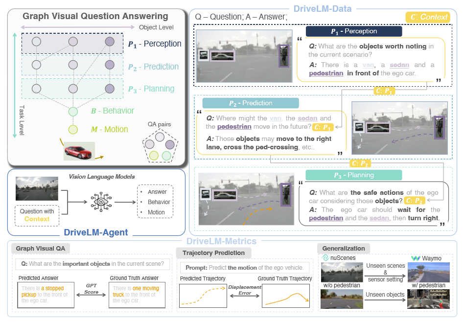
図1：本論文では DriveLM を提示する。これはエンドツーエンド自動運転のための新しいタスク、データセット、評価指標、ベースラインである。［10］に着想を得て、DriveLM はグラフ視覚質問応答（Graph Visual Question Answering, GVQA）を考える。GVQA では、QA ペアが論理的依存関係によって相互に結び付けられる。この依存関係は、オブジェクトレベル（すなわちオブジェクト対の間の相互作用）と、タスクレベル（例えば知覚 → 予測 → 計画 → 行動（自然言語で記述された離散化された行動）→ 動作（連続的な軌跡））の両方に存在する。GVQA のベースラインである DriveLM-Agent を学習するために DriveLM-Data を提案する。ゼロショット汎化を必要とする困難な設定において、DriveLM-Metrics を用いてその有効性を検証する。
図中ラベル：Graph Visual Question Answering＝グラフ視覚質問応答、Object Level＝オブジェクトレベル、Task Level＝タスクレベル、P1 - Perception＝P1：知覚、P2 - Prediction＝P2：予測、P3 - Planning＝P3：計画、B - Behavior＝B：行動、M - Motion＝M：動作、QA pairs＝QA ペア、Vision Language Models＝視覚言語モデル、Question with Context＝コンテキスト付きの質問、Answer＝回答、Behavior＝行動、Motion＝動作、Q – Question; A – Answer＝Q：質問、A：回答、C: Context＝C：コンテキスト。P1 の QA：「Q：現在のシナリオで注目すべきオブジェクトは何か？ A：自車の前方にバン、セダン、歩行者がいる。」P2 の QA：「Q：バン、セダン、歩行者は将来どこへ動く可能性があるか？（C: P1） A：これらのオブジェクトは右車線へ移動する、横断歩道を渡る、などの可能性がある。」P3 の QA：「Q：これらのオブジェクトを考慮すると、自車の安全な行動は何か？（C: P2） A：自車は歩行者とセダンを待ち、その後右折すべきである。」DriveLM-Metrics 内：Graph Visual QA＝グラフ視覚 QA、Q: What are the important objects in the current scene?＝Q：現在のシーンで重要なオブジェクトは何か？、Predicted Answer＝予測された回答（「自車の前方に停止しているピックアップがいる」）、Ground Truth Answer＝正解の回答（「自車の前方に動いているトラックが 1 台いる」）、GPT Score＝GPT スコア、Trajectory Prediction＝軌跡予測、Prompt: Predict the motion of the ego vehicle＝プロンプト：自車の動作を予測せよ、Predicted Trajectory＝予測軌跡、Ground Truth Trajectory＝正解軌跡、Displacement Error＝変位誤差、Generalization＝汎化、Unseen scenes & sensor setting＝未知のシーンとセンサ設定、Unseen objects＝未知のオブジェクト、w/o pedestrian＝歩行者なし、w/ pedestrian＝歩行者あり
要旨
本研究では、Web 規模のデータで学習された視覚言語モデル（VLM）をエンドツーエンド運転システムに統合し、汎化性能を高め、人間のユーザとの対話性を実現する方法を検討する。近年の手法は単一ラウンドの視覚質問応答（VQA）によって VLM を運転に適応させているが、人間のドライバーは複数のステップで意思決定を推論する。人間は主要なオブジェクトの位置特定から始め、行動を起こす前にオブジェクト間の相互作用を推定する。鍵となる洞察は、知覚・予測・計画の質問応答ペアを通じてグラフ構造の推論をモデル化する我々の提案タスク Graph VQA によって、人間の推論過程を模倣するのに適した代理タスクが得られるという点である。我々は nuScenes と CARLA を基にデータセット（DriveLM-Data）を具体化し、Graph VQA とエンドツーエンド運転を同時に行う VLM ベースのベースライン手法（DriveLM-Agent）を提案する。実験により、Graph VQA が運転シーンについて推論するための単純で原理的な枠組みを提供すること、そして DriveLM-Data がこのタスクに対する挑戦的なベンチマークを提供することが示される。我々の DriveLM-Agent ベースラインは、最先端の運転専用アーキテクチャと比較して遜色のないエンドツーエンド自動運転性能を示す。特に、未知のセンサ構成でゼロショット評価したときにその利点が顕著である。質問ごとのアブレーション研究から、性能向上はグラフ構造における予測と計画の QA ペアの豊富なアノテーションに由来することがわかる。すべてのデータ、モデル、公式評価サーバは https://github.com/OpenDriveLab/DriveLM で公開されている。
キーワード：視覚言語モデル・エンドツーエンド自動運転
脚注：*同等の貢献。†プロジェクトリーダー。
1 はじめに
現在の自動運転（AD）スタックには、依然として重要な能力が欠けている［10,15］。主要な要件の 1 つは汎化であり、これは未知のシナリオや不慣れなセンサ構成に対処する能力を含む。2 つ目の要件はこれらのモデルと人間との対話に関わるものであり、例えば運用時に説明可能性を義務付ける EU の規制によって強調されている［3］。さらに、今日の AD モデルとは異なり、人間は幾何学的に精密な鳥瞰図（BEV）表現［17,32,46］に基づいて運転しているわけではない。そうではなく、人間は暗黙のうちにオブジェクト中心の知覚、予測、計画（これを \(P_{1-3}\) と呼ぶ）を行っている。すなわち、主要なオブジェクトを大まかに識別・位置特定し、続いてそれらの起こりうる動きについて推論し、この情報を運転行動へと集約する［60,76］。
同時に、別の分野も前進を続けている。視覚言語モデル（Vision-Language Models, VLM）である［47,54,90,106］。これらのモデルにはいくつかの強みがある。第一に、インターネット規模のデータから得た世界についての基礎的な理解を持っており、これは AD における計画の汎化を促進しうる。実際、この種の汎化は、より単純なロボティクスのタスクにおいて VLM によってすでに達成されている［23,108］。第二に、言語表現を入力および出力として用いることで、現在の手法でより一般的なバウンディングボックスや軌跡［19,31,49,70］とは異なり、これらのモデルと人間にとって親しみやすい対話を行う基盤が得られる。最後に、VLM は論理的推論によって結び付けられた複数のステップで意思決定を行うことができる［5,21,93,95,103,108］。重要なのは、複数の別々のステップで推論するにもかかわらず、VLM がエンドツーエンドで微分可能なアーキテクチャであるという点であり、これは自動運転にとって非常に望ましい特性である［10］。
VLM を AD システムに適用可能にしようとする最近の研究は、2 つのカテゴリに分けられる。シーンレベルの視覚質問応答（VQA）と、単一オブジェクトレベルの VQA である。シーンレベル VQA とは、運転行動を 1 つか 2 つの根拠とともに記述するタスクを指す。例えば「安全なので、車は右車線へ移動している」［41,42］といったものである。単一オブジェクトレベル VQA は、単一のオブジェクトに対する自車の反応の理解を、「何が・どれが・どこで・どのように・なぜ（what-which-where-how-why）」の形式の QA の連鎖として定式化する。例えば「自車の前方の交差点を白いシャツの歩行者が横断しており、自車はその歩行者に衝突したくないので、自車は停止する」［56,67,71］といったものである。残念ながら、これらのパラダイムはいずれも、複数のオブジェクトを考慮しそれぞれについて複数のステップで推論する人間の \(P_{1-3}\) 推論過程を模倣するのに適した代理タスクを提供しない。そこで本論文では、新しいタスクを、対応するデータセットおよびベースラインのモデルアーキテクチャとともに提案する（図1）。
タスク。グラフ視覚質問応答（GVQA）は、\(P_{1-3}\) の推論を有向グラフ内の一連の質問応答ペア（QA）として定式化するものである。前述の AD 向け VQA タスクとの主要な違いは、QA 間に論理的依存関係が存在し、それを回答過程の誘導に利用できる点である。GVQA は、専用の評価指標とともに、行動計画と動作計画に関する質問も包含する（詳細は第2節）。
データセット。DriveLM-nuScenes と DriveLM-CARLA は、グラフ状に配置され、論理的推論を通じて画像と運転行動を結び付けるアノテーション付き QA から構成される。既存のベンチマークと比較して、フレームあたりのテキストアノテーションが大幅に多い（表1および図2）。さらに、DriveLM-CARLA の不可欠な構成要素として、CARLA Leaderboard 2.0 向けに初めて実際に動作するルールベースのエキスパートアルゴリズムである PDM-Lite［4］を構築した。これらの学習用データセットに、ゼロショット汎化を評価するための挑戦的なテストデータを組み合わせる。
ベースライン。DriveLM-Agent は、任意の汎用 VLM［47,54,65,106］に適用可能な軌跡トークナイザと、論理的依存関係を VLM へのコンテキスト入力としてモデル化するグラフプロンプティング方式とを組み合わせて用いる。その結果、VLM をエンドツーエンド AD に効果的に転用するための単純な方法論が得られる（第3節）。
我々の実験は有望な結果を示している。DriveLM 上の GVQA は挑戦的なタスクであり、現在の手法は中程度のスコアにとどまり、高い QA 性能を達成するには論理的依存関係のより良いモデル化が必要と考えられることがわかった。それでも、DriveLM-Agent はタスクに依存しないアーキテクチャであるにもかかわらず、オープンループ計画の設定でテストした場合、最先端の運転専用モデル［32］と比べて遜色のない性能をすでに示す。さらに、グラフ構造を用いることでゼロショット汎化が向上し、nuScenes［6］のデータのみで学習した後に、未知の展開先である Waymo データ［77］に対して DriveLM-Agent が正しく対処できるようになる。最後に、質問ごとの分析から、予測段階と計画段階の QA ペアが最終的な運転判断に最も寄与することがわかった。これらの結果から、GVQA の改善は強い汎化能力を持つ自動運転エージェントの構築に向けて大きな可能性を秘めていると考える。
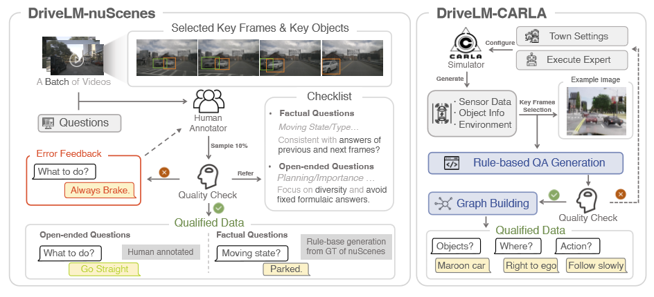
図2：アノテーションパイプライン。DriveLM-nuScenes では、nuScenes/OpenLane-V2 の正解アノテーションと人間のアノテータからのフィードバックの両方を用いる、半ルールベースの QA ラベリングパイプラインを採用する。パイプラインの重要な部分は複数ラウンドの品質チェックであり、これにより妥当なコストで高いデータ品質が保証される。DriveLM-CARLA では、代わりに PDM-Lite と呼ぶ新しいエキスパートアルゴリズムを用いた完全にルールベースの QA ラベリングパイプラインを利用しつつ、同じ水準を満たしている。
図中ラベル：Selected Key Frames & Key Objects＝選択されたキーフレームとキーオブジェクト、A Batch of Videos＝動画のバッチ、Questions＝質問、Human Annotator＝人間のアノテータ、Sample 10%＝10% をサンプリング、Quality Check＝品質チェック、Refer＝参照、Error Feedback＝エラーフィードバック、What to do?＝何をすべきか？、Always Brake.＝常にブレーキ。、Checklist＝チェックリスト、Factual Questions＝事実に関する質問、Moving State/Type…＝移動状態／種類…、Consistent with answers of previous and next frames?＝前後のフレームの回答と整合しているか？、Open-ended Questions＝自由回答形式の質問、Planning/Importance…＝計画／重要度…、Focus on diversity and avoid fixed formulaic answers.＝多様性を重視し、決まりきった定型的な回答を避ける。、Qualified Data＝合格データ、Human annotated＝人手でアノテーション、Moving state?＝移動状態は？、Parked.＝駐車中。、Go Straight＝直進、Rule-base generation from GT of nuScenes＝nuScenes の正解からルールベースで生成、Simulator＝シミュレータ、Configure＝設定、Town Settings＝タウン設定、Execute Expert＝エキスパートを実行、Generate＝生成、Sensor Data＝センサデータ、Object Info＝オブジェクト情報、Environment＝環境、Key Frames Selection＝キーフレーム選択、Example Image＝画像の例、Rule-based QA Generation＝ルールベースの QA 生成、Graph Building＝グラフ構築、Objects?＝オブジェクトは？、Where?＝どこに？、Action?＝行動は？、Maroon car＝えび茶色の車、Right to ego＝自車の右、Follow slowly＝ゆっくり追従
2 DriveLM：タスク、データ、評価指標
人間のドライバーは通常、意思決定の過程を、論理的な進行に従う別個の段階に分解する。これには、主要なオブジェクトの識別と位置特定、それらの起こりうる将来の行動と相互作用、そしてこれらすべての情報に基づく自車の計画が含まれる［27,55］。このことに着想を得て、人間の推論過程を模倣するのに適した代理タスクとして機能する GVQA を、DriveLM の重要な構成要素として提案する。本節では、GVQA タスクの定式化を説明し（2.1節）、著名な運転データセットを用いた GVQA の具体化の例として DriveLM-Data を紹介し（2.2節）、評価に用いる DriveLM-Metrics を概観する（2.3節）。この方向のさらなる研究を促すため、さまざまな手法をベンチマークし、言語モデルと自動運転の組み合わせについてより多くの知見を得るための公式評価サーバ（公開リーダーボード付き）を設置する予定である。
2.1 DriveLM-Task：GVQA
1 枚の画像フレームに対するすべての質問応答ペア（QA）をグラフに編成する。「グラフ構造」という用語は有向非巡回グラフ（DAG）を指すものとして用いる。例えば、現在の質問は（複数の）親ノードおよび祖父母ノードからコンテキストを得ることができる。グラフ \(G = (V, E)\) は頂点の集合 \(V\) を含み、各頂点はシナリオ内の 1 つ以上の主要オブジェクトに関連付けられた QA ペア \(v = (q, a)\) を表す。GVQA と通常の VQA の主要な違いは、GVQA の QA が論理的依存関係を持つことであり、我々はこれを頂点間のエッジとして定式化する。\(E \subseteq V \times V\) は有向エッジの集合であり、各エッジ \(e = (v_p, v_c)\) は親 QA と子 QA を結ぶ。エッジ集合 \(E\) は、オブジェクトレベルとタスクレベルのエッジという 2 つの次元を取り入れて定式化する。オブジェクトレベルでは、異なるオブジェクト間の相互作用の影響を表す論理エッジ \(e \in E\) を構築する。例えば、図1（中央）の図示では、セダンに対する計画 QA ノードは歩行者の知覚 QA ノードの影響を受ける。タスクレベルでは、異なる推論段階の論理的連鎖を捉える論理エッジ \(e \in E\) を確立する。
- 知覚（\(P_1\)）：現在のシーンにおける主要オブジェクトの識別、記述、位置特定。
- 予測（\(P_2\)）：知覚結果に基づく、主要オブジェクトの起こりうる行動・相互作用の推定。
- 計画（\(P_3\)）：自車がとりうる安全な行動。
- 行動（\(B\)）：運転判断の分類。
- 動作（\(M\)）：自車の将来軌跡のウェイポイント。
| データセット | 元データセット | フレーム数 | フレームあたりの平均 QA 数 | 知覚 | 予測 | 計画 | 論理 |
|---|---|---|---|---|---|---|---|
| nuScenes-QA［67］ | nuScenes | 34,149 | 13.5 | 460k** | ✗ | ✗ | None |
| nuPrompt［98］ | nuScenes | 34,149 | 1.0 | 35k* | ✗ | ✗ | None |
| HAD［41］ | HDD | 25,549 | 1.8 | 25k | ✗ | 20k | None |
| BDD-X［42］ | BDD | 26,228 | 1 | 26k | ✗ | ✗ | None |
| LingoQA［59］ | LingoQA | 28,000 | 15.3 | - | - | - | None |
| DRAMA［56］ | DRAMA | 17,785 | 5.8 | 85k | ✗ | 17k | Chain |
| Rank2Tell［71］ | Rank2Tell | 5,800 | - | - | ✗ | - | Chain |
| DriveLM-nuScenes | nuScenes | 4,871 | 91.4 | 144k* | 153k | 146k | Graph |
| DriveLM-CARLA† | CARLA | 64,285 | 24.4 | 697k** | 311k** | 558k** | Graph |
| DriveLM-CARLA‡ | CARLA | 5,721 | 24.8 | 63k** | 28k** | 51k** | Graph |
表1：DriveLM-nuScenes および -CARLA と既存データセットの比較。DriveLM-Data は、アノテーションの量、網羅性（知覚、予測、計画をカバー）、論理（連鎖からグラフへ）の面で大きく前進している。† はデータセット全体、‡ はキーフレームのデータセット、* は半ルールベースのラベリング（人間のアノテータあり）、** は完全ルールベース（人間のアノテータなし）を示す。- は公開されていないことを意味する。
論理列の値：None＝なし、Chain＝連鎖、Graph＝グラフ
知覚、予測、計画（\(P_{1-3}\)）の概念はエンドツーエンド AD［10］におけるものと同様であり、動作と行動の概念は自車の将来軌跡に基づく。具体的には、動作 \(M\) を自車の将来軌跡として定義する。これは鳥瞰図（BEV）における座標 \((x, y)\) を持つ \(N\) 個の点の集合であり、\(M = \{(x_0, y_0), (x_1, y_1), ..., (x_N, y_N)\}\) と表す。各点は、一定の時間間隔ごとの将来位置と現在位置のオフセットである。このとき、各時間間隔における \(x, y\) の距離は次のように計算される。
\[ \{x, y\}_{\text{dist}} = \{(\delta_{x,1}, \delta_{y,1}), ..., (\delta_{x,N}, \delta_{y,N})\}, \tag{1} \]
ここで \(i = 1, 2, \ldots, N\) に対して \(\delta_{x,i} = x_i - x_{i-1}\)、\(\delta_{y,i} = y_i - y_{i-1}\) である。行動表現の目的は、\(P_{1-3}\) から \(M\) へのインタフェースとして機能することである。行動表現を得るために、\(x_{\text{dist}}\) と \(y_{\text{dist}}\) の平均を、あらかじめ定義されたビンの 1 つに対応付ける。各ビンは速度または操舵のいずれかのカテゴリに対応する。これらをそれぞれ \(B_{sp}\) および \(B_{st}\) と表す。本研究では 5 つのビンを考える。
\[ B_{sp} \in \{\texttt{fast}_2, \texttt{fast}_1, \texttt{moderate}, \texttt{slow}_1, \texttt{slow}_2\}, \] \[ B_{st} \in \{\texttt{left}_2, \texttt{left}_1, \texttt{straight}, \texttt{right}_1, \texttt{right}_2\}, \]
ここで添え字の数字は強度を示す。ある軌跡に対する速度と操舵のカテゴリの組み合わせが、その行動カテゴリ \(B = (B_{sp}, B_{st})\) を形成する。VLM による運転の研究の出発点として \(B\) の単純な定義を用いるが、我々の定式化は車線変更や追い越しのようなより抽象的な行動を取り入れることにも対応している点を付記しておく。
2.2 DriveLM-Data
2.1節で定義したグラフ構造を持つ包括的かつ正確な QA を提供するために、DriveLM-nuScenes と DriveLM-CARLA を導入する。nuScenes と CARLA の間には大きな相違があるため、これらのデータセットの収集方法と統計は異なる。
DriveLM-nuScenes。アノテーション過程を 3 つのステップに分ける。すなわち、動画クリップからキーフレームを選択し、これらのキーフレーム内でキーオブジェクトを選び、その後これらのキーオブジェクトについてフレームレベルの \(P_{1-3}\) QA をアノテーションする。知覚 QA の一部は nuScenes［6］と OpenLane-V2［87］の正解データから生成され、残りの QA は人手でアノテーションされる。人手アノテーション用の質問テンプレートは、人間がどのように運転判断を下すかを考慮して 5 名のドメイン専門家が設計した。アノテータには各フレームに対してすべての質問テンプレートが提示され、すべての質問に回答するよう促されるが、適合しない可能性に対応するためスキップの選択肢も与えられる。DriveLM-nuScenes ではデータの大部分を人手でアノテーションするため、この部分では品質が特に重要である。アノテーション時には、厳格な品質チェックを複数ラウンド実施する。各ラウンドでは、データを異なるバッチに分類し、各バッチのデータの 10 パーセントを検査する。この 10 パーセント中の人手アノテーションデータの合格率が期待に達しない場合、アノテータにそのバッチの全データの再ラベル付けを依頼する。図2では QA アノテーションパイプラインの例を示しており、すべての質問が我々の基準に従って品質チェックを受ける。その結果、DriveLM-nuScenes は、より大きな規模、より高い網羅性、より複雑な構造によって、これまでに提案されたデータセットの中で際立っている（表1を参照）。これらの QA は、知覚と予測から計画に至るまで運転過程のさまざまな側面をカバーしており、自動運転シナリオの包括的な理解を提供する（詳細は補足資料）。
DriveLM-CARLA のエキスパート。Leaderboard 2.0 フレームワーク［22］において CARLA 0.9.14 を用いてデータを収集する。Leaderboard 2.0 は、前身の Leaderboard 1.0 と比べて大量の新しい運転シナリオを含む。しかし現時点では、Leaderboard 2.0 で学習データを大規模に収集する既存の手法は存在しない。例えば、Leaderboard 1.0 における最先端手法である TransFuser++［36］が用いる特権的なルールベースのエキスパートは、Leaderboard 2.0 の 8 キロメートル超の公式検証ルートにおいて、運転スコア（Driving Score, DS）がわずか 2% にとどまる。我々は、Leaderboard 2.0 の新たな課題に対処できる新しいエキスパートアルゴリズム PDM-Lite を構築する。我々のアプローチは、nuPlan［7］向けのルールベースのプランナである PDM-Closed［19］と類似している。PDM-Lite は、先行車両、歩行者、一時停止標識、信号機に基づいて目標速度を得るために Intelligent Driver Model（IDM）［84］を用いる。複雑なコスト関数によって 16 個の候補から 1 つを選択する PDM-Closed とは異なり、我々は 2 つの候補と TransFuser++ のエキスパート［36］に基づくより単純なコスト関数のみを用いる。これにより、スケーラブルな QA 生成に適した軽量なプランナが得られる。PDM-Lite は CARLA の公式検証ルートで 44% という改善された DS を達成する。詳細は補足資料に記載されている。
DriveLM-CARLA の QA 生成。DriveLM-CARLA データセットを収集するために、都市部、住宅地、郊外の一連のルートを設定し、これらのルート上で PDM-Lite を実行する。この過程で、必要なセンサデータを収集し、キーフレームをサンプリングし、オブジェクトとシーンに関する特権情報に基づいて関連する QA を生成し、この一連の QA をグラフとして結ぶ論理的関係を整理する。データとラベルは 4 FPS で生成し、エキスパートの判断の変化（例えばエキスパートが加速からブレーキに切り替えるとき）に基づいてキーフレームを抽出する。ルールベースのアノテーションパイプラインを図2に示す。データ収集中に、シーン内の静的および動的オブジェクトの状態と、エキスパートの発動したルールに関する特権情報をシミュレータから抽出する。InterurbanAdvancedActorFlow、MergerIntoSlowTraffic、VehicleTurningRoute を除く 38 のシナリオすべてを用い、シミュレータから抽出した情報に基づいて、人手で作成した文テンプレートで質問と回答を作成する。正確な質問とそのグラフ構造は補足資料に記載されている。我々のアノテーション過程には、CARLA でルートとシナリオの設定を定義するだけで後続のステップを自動的に実行できるため、容易にスケールできるという利点がある。160 万（1.6M）の QA を含む（そして容易なスケーリング手順を備える）我々の DriveLM-CARLA は、表1に示すように、既存のベンチマークの中でテキスト内容の総量の点で最大の運転・言語ベンチマークとして際立っている。
2.3 DriveLM-Metrics
GVQA を評価するために、DriveLM-Metrics は動作 \(M\)、行動 \(B\)、\(P_{1-3}\) を評価する 3 つの構成要素からなる。動作段階の性能を測定するために、UniAD［32］に従い、nuScenes および Waymo ベンチマークの標準的な指標、すなわち平均変位誤差と最終変位誤差（ADE、FDE）、および予測軌跡の衝突率を用いる。行動の予測は分類精度によって評価し、全体の精度を操舵と速度の成分に分解した内訳も示す。最後に、\(P_{1-3}\) の性能を 2 つの指標を用いて測定する。SPICE［2］は VQA と画像キャプション生成で広く用いられている指標であり、意味的な内容を無視して、予測テキストと正解との構造的類似度を計算する。同時に、回答の意味的な整合性を測定し SPICE 指標を補完するために GPT スコアを用いる。具体的には、質問、正解の回答、予測された回答、そして回答の数値スコアを求めるプロンプトを ChatGPT-3.5［61,62］に送る。返されたテキストを解析してスコアを得る。スコアが高いほど意味的な正確さが高いことを示す。
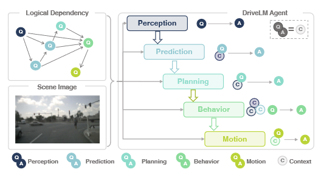
図3：DriveLM-Agent のパイプライン。シーン画像が与えられると、VLM はコンテキスト付きのプロンプティングを行い、5 つの QA 段階間の論理的依存関係をモデル化する。コンテキストは先行する QA を用いて構築され、1 つ以上のソースを持ちうる。
図中ラベル：Logical Dependency＝論理的依存関係、Scene Image＝シーン画像、DriveLM Agent＝DriveLM エージェント、Perception＝知覚、Prediction＝予測、Planning＝計画、Behavior＝行動、Motion＝動作、Context＝コンテキスト（Q＝質問、A＝回答、C＝コンテキスト）
3 DriveLM-Agent：GVQA のベースライン
本節では、第2節で詳述した GVQA タスクのためのベースライン手法である DriveLM-Agent を提示する。DriveLM-Agent は汎用の視覚言語モデルの上に構築されており、したがって事前学習中に獲得された基礎的な知識を活用できる。我々の全体的な目標は、VQA のさまざまな段階（\(P_1, P_2, P_3, B\)）を経て、画像を望ましい自車の動作（\(M\)）へと変換することである。このために、アーキテクチャの単純さとファインチューニングの柔軟性から、ベースの VLM として BLIP-2［47］を選択するが、我々のアプローチは他の VLM にも依存なく適用できる。
図3に示すように、DriveLM-Agent はいくつかの段階に分解できる。（1）\(P_{1-3}\)、すなわち知覚、予測、計画は、シーンを理解しその構造について推論するための基礎層として機能する。（2）行動段階は、\(P_{1-3}\) からの重要な情報を、言語空間における望ましい運転行動の記述へと集約する。（3）最後に、動作段階が行動を実行可能な運転軌跡へと変換する。リンクされた各 QA 間の論理的依存関係を実装するために、GVQA グラフ内で接続されたノード間のコンテキストを用いることを提案する。以下ではこの考えを詳しく説明する。
3.1 コンテキスト付きプロンプティング
［16,66］のように画像を直接動作へと変換することは極めて困難である。人間が多段階の推論過程を行う傾向に動機付けられ、VLM ベースの運転にも同様の戦略を用いることを提案する。そうすることで、LLM に蓄えられた知識の検索を促進し、説明可能性を向上させる。
より正確には、モデルは推論過程における前のステップの回答を、後続の質問のコンテキストとして用いるように設計されている。各エッジ \(e = (v_p, v_c) \in E\) について、親ノード \(v_p\) の QA を、接頭辞「Context: 」を付けて現在のノード \(v_c\) の質問に付加する。コンテキストには複数の先行ノードからの QA を含めることもでき、その場合はすべての QA を 1 つのコンテキスト系列に連結する。コンテキストは GVQA において論理的依存関係を定式化するための可能な実装の 1 つにすぎず、その単純さゆえに選択したものである点は注目に値する。この方式によって、グラフによって確立された論理的依存関係に基づき、関連する情報を前方へ受け渡す。
推論時のグラフのサイズと構造はアルゴリズムの設計上の選択であり、タスクや利用可能な計算予算に基づいて調整できることに注意されたい。我々はこの性質を利用して、利用可能なすべての QA で学習を行う一方、推論はヒューリスティクスを用いて質問をサンプリングした特定の部分グラフ上で行う。詳細は補足資料を参照されたい。
行動を通じたコンテキストの集約。運転には、適切な対応を必要とする多種多様な状況が含まれる。しかし、これらの状況が多様であるにもかかわらず、ほぼすべての事象が、行動の集合へと離散化できる判断を伴うという点は興味深い。例えば、適切にブレーキをかけることで、赤信号、一時停止標識、車両前方のオブジェクトの存在など、さまざまな状況に対処できる場合がある。我々の行動段階の焦点は、そのような行動、すなわち車両の意図する動きを明確に述べる自然言語の文を生成することである。2.1節で述べたように、この記述は、モデルがグラフからすべての重要な情報を要約する振り返りのステップとして効果的に機能する。そこで、行動の予測には、あらゆる可能なコンテキストのソース、すなわち \(P_{1-3}\) のすべての QA を用いることを提案する。この設計が VLM による運転にとって極めて重要であることを経験的に確認している。
3.2 動作のための軌跡トークン化
汎用の VLM を用いて細かな数値結果を出力することは容易ではないため、RT-2［108］は専用の軌跡トークン化モジュールに基づいてロボットの行動を扱っている。我々はこのアプローチを用いて、DriveLM-Agent が画像と行動の記述を入力として受け取り、軌跡を出力できるようにする。具体的には、学習セットの軌跡の統計に基づいて、ウェイポイントの座標を経験的に 256 個のビンに分割する。BLIP-2 の言語トークナイザのトークンを再定義して各ビンに対応するトークンを設け、再定義した語彙で VLM をファインチューニングする。単純さのため、このタスクの実行には同じ VLM アーキテクチャ（BLIP-2）を用いるが、独立した LoRA の重みを持ち、この動作段階の QA のみからなるデータセットで学習する。したがって、この機能は軽量な LLM［68］や、コマンドを入力として受け付ける運転専用アーキテクチャ［31,99］を用いて実行することも可能である。
4 実験
本節では、以下の研究課題に取り組むことを目的とした実験結果を示す。（1）VLM をエンドツーエンド自動運転に効果的に転用するにはどうすればよいか？（2）運転用の VLM は、未知のセンサ構成で評価した場合に汎化できるか？（3）知覚、予測、計画における各質問は、最終的な行動判断にどのような影響を与えるか？（4）VLM は GVQA を通じて知覚、予測、計画をどの程度うまく行えるか？ DriveLM-nuScenes におけるさらなる VLM に関する実験と、DriveLM-CARLA における未知のオブジェクトへの汎化に関する実験は補足資料に含めている。
セットアップ。ここでは、実験で用いる 2 つの設定の主要な実装の詳細を簡単に概観する（追加の詳細は補足資料に記載）。すべてのファインチューニングは LoRA［30］で実装する。DriveLM-nuScenes では、train 分割で BLIP-2 を 10 エポックファインチューニングする。GPU ごとのバッチサイズは 2 とし、学習過程全体は 8 基の V100 GPU で約 7 時間かかる。DriveLM-CARLA の train 分割のキーフレームで BLIP-2 を 6 エポック学習する。これには 4 基の A100 GPU で 6 時間かかる。
4.1 エンドツーエンド運転のための VLM
最初の実験では、DriveLM-nuScenes においてオープンループ計画を行う VLM の能力を評価することを目的とする。特に、行動段階と動作段階に与えられるコンテキストの影響を調べる。センサデータ（および VLM 手法の場合はテキスト入力）が与えられたとき、モデルは自車の将来軌跡をウェイポイントの形式で予測する必要がある。オープンループ計画はデータ分布の不一致の問題を抱えるが［50］、DriveLM-nuScenes でアノテーションされたキーフレームのみで評価することでこれを緩和するよう試みる。
ベースライン。タスクの難しさの参考として、単純な Command Mean ベースラインを示す。nuScenes の各フレームは「左折」「右折」「直進」の 3 つのコマンドのいずれかに関連付けられている。学習セットのうち、コマンドが現在のテストフレームのコマンドと一致するすべての軌跡の平均を出力する。さらに、nuScenes における現在の最先端手法である UniAD［32］と我々のアプローチを比較する。動画入力を必要とする元の設定に加えて、公平な比較のために単一フレーム版（「UniAD-Single」）を学習する。最後に、BLIP-RT-2 は、3.2節で述べた軌跡トークン化方式を用いて、動作タスクのみについて DriveLM-Data でファインチューニングした BLIP-2［47］を表す。これは、DriveLM-Agent と同一のネットワークアーキテクチャを用いるが、コンテキスト入力や VQA の学習データを用いない場合の性能の指標として機能する。
DriveLM-Agent。提案する変更を段階的に取り入れた 3 つの DriveLM-Agent の変種を考える。（1）行動を予測してから動作を予測する（2.1節で述べたとおり）が、行動予測に \(P_{1-3}\) のコンテキストを一切用いない 2 段階版（「None」）。（2）\(P_{1-3}\) のグラフを構築するが、最終ノード（\(P_3\)）のみを行動段階に渡す「Chain」版。（3）\(P_{1-3}\) のすべての QA を \(B\) のコンテキストとして用いる完全なモデル（「Graph」）。
結果。上記の手法の結果を表2に示す。ベースラインの中では、BLIP-RT-2 は UniAD-Single に及ばない（ただし両者とも Command Mean と比べれば良好な性能を示す）。これは、推論を一切行わない単一段階のアプローチでは、nuScenes における従来の最先端手法に太刀打ちできないことを示している。しかし、動作の中間ステップとして行動を予測する提案の DriveLM-Agent は、大幅な性能向上をもたらし、UniAD-Single を上回る。これは、適切なプロンプティングを用いれば、VLM がエンドツーエンド運転において驚くほど競争力を持ちうることを示している。興味深いことに、汎化を伴わない実験設定では、DriveLM-Agent の Chain 版と Graph 版はコンテキストなしと比べてさらなる利点をもたらさない。さらに、単一フレームの VLM は、特権的な動画ベースの UniAD モデルには及ばず、このタスクには動画入力を用いる VLM が必要である可能性を示している。動画入力 VLM の結果は補足資料に示す。
| 手法 | 行動（\(B\)）のコンテキスト | 動作（\(M\)）のコンテキスト | nuScenes | Waymo | ||||||||
|---|---|---|---|---|---|---|---|---|---|---|---|---|
| 行動（\(B\)） | 動作（\(M\)） | 行動（\(B\)） | 動作（\(M\)） | |||||||||
| Acc. ↑ | Speed ↑ | Steer ↑ | ADE ↓ | Col. ↓ | Acc. ↑ | Speed ↑ | Steer ↑ | ADE ↓ | Col. ↓ | |||
| Command Mean | - | - | - | - | - | 4.57 | 5.72 | - | - | - | 7.98 | 11.41 |
| UniAD-Single | - | - | - | - | - | 1.80 | 2.62 | - | - | - | 4.16 | 9.31 |
| BLIP-RT-2 | - | - | - | - | - | 2.63 | 2.77 | - | - | - | 2.78 | 6.47 |
| DriveLM-Agent | None | \(B\) | 61.45 | 72.20 | 84.73 | 1.39 | 1.67 | 35.70 | 43.90 | 65.20 | 2.76 | 6.59 |
| Chain | \(B\) | 50.43 | 60.32 | 75.34 | 2.07 | 2.08 | 34.62 | 41.28 | 64.55 | 2.85 | 6.89 | |
| Graph | \(B\) | 57.49 | 69.89 | 80.63 | 1.74 | 1.89 | 39.73 | 54.29 | 70.35 | 2.63 | 6.17 | |
| UniAD［32］ | - | - | - | - | - | 0.80 | 0.17 | - | - | - | - | - |
表2：DriveLM-nuScenes におけるオープンループ計画と、Waymo におけるセンサ構成をまたいだゼロショット汎化。nuScenes では、行動（\(B\)）を動作（\(M\)）のコンテキストとして用いることで、VLM によるエンドツーエンド運転が、最先端の運転専用アーキテクチャである UniAD-Single と同等の性能に達する。Waymo では、DriveLM-nuScenes で学習した後、Waymo の val セットから 1k フレームをランダムにサンプリングした。DriveLM-Agent は UniAD-Single を上回り、グラフのコンテキストから恩恵を受ける。
列見出し：Acc.＝精度、Speed＝速度、Steer＝操舵、Col.＝衝突率
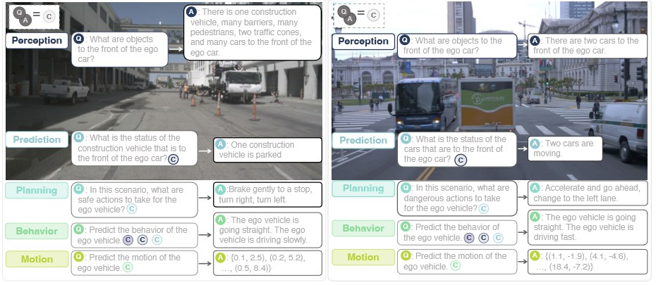
図4：DriveLM-Agent の定性的結果。（左）DriveLM-nuScenes の val フレーム、（右）Waymo の val フレーム。質問（Q）、コンテキスト（C）、予測された回答（A）を示す。DriveLM-Agent の出力は人間のユーザにとって解釈が容易である。
図中ラベル：Perception＝知覚、Prediction＝予測、Planning＝計画、Behavior＝行動、Motion＝動作。（左）知覚 Q「自車の前方にあるオブジェクトは何か？」A「自車の前方に工事車両が 1 台、多数のバリア、多数の歩行者、2 本のトラフィックコーン、多数の車がある。」予測 Q「自車の前方にある工事車両の状態は何か？（C）」A「工事車両 1 台が駐車している。」計画 Q「このシナリオで自車がとるべき安全な行動は何か？（C）」A「緩やかにブレーキをかけて停止する、右折する、左折する。」行動 Q「自車の行動を予測せよ。（C）（C）（C）」A「自車は直進している。自車はゆっくり走行している。」動作 Q「自車の動作を予測せよ。（C）」A「{(0.1, 2.5), (0.2, 5.2), …, (0.5, 8.4)}」。（右）知覚 Q「自車の前方にあるオブジェクトは何か？」A「自車の前方に 2 台の車がある。」予測 Q「自車の前方にある車の状態は何か？（C）」A「2 台の車は動いている。」計画 Q「このシナリオで自車がとると危険な行動は何か？（C）」A「加速して前進する、左車線へ変更する。」行動 Q「自車の行動を予測せよ。（C）（C）（C）」A「自車は直進している。自車は速く走行している。」動作 Q「自車の動作を予測せよ。（C）」A「{(1.1, -1.9), (4.1, -4.6), …, (18.4, -7.2)}」
4.2 センサ構成をまたいだ汎化
4.1節のモデルを評価するためのより挑戦的な設定として、これらをさらなる学習なしに新しいドメインである Waymo データセット［77］に適用する。Waymo には後方カメラの画像が含まれないため、UniAD-Single ではこの入力を除外する。VLM 手法は前方視点のみを用い、いかなる適応も必要としない。
結果。表2に示すように、UniAD-Single は新しいセンサ構成にうまく対処できず、性能が BLIP-RT-2 を下回る。DriveLM-Agent の多段階アプローチはさらなる改善をもたらす。特に、速度予測の精度は、コンテキストなしの 43.90 から完全なグラフでの 54.29 へと上昇する。一方、Chain アプローチは十分に有用な情報を提供せず、速度精度はわずか 41.28 にとどまる。
nuScenes と Waymo における DriveLM-Agent の定性的結果を図4に示す。モデルは、いくつかの例外（例えば DriveLM-nuScenes における計画、Waymo における知覚）を除き、おおむね直感的な回答を提供する。これは、対話型運転システムに向けた GVQA の有用性を示している。さらに Waymo では、知覚が不完全であるにもかかわらず、意味のある予測と計画の回答が得られている。さらなる可視化については補足資料を参照されたい。
4.3 DriveLM-nuScenes における質問ごとの分析
次に、各種類の QA ペアをコンテキストとして追加することで、それらが行動性能に与える影響を分析する。まず、各段階で代表的な QA ペアの集合を選択する。次に、QA ペアの集合のさまざまな組み合わせで BLIP-2 を学習し、それらの QA ペアを行動に関する質問のコンテキストとして追加する（表3）。
各段階の代表的な質問。各段階における代表的な QA ペアの異なる集合を次のように選択する。
- \(P_{1-1}\)：現在のシーンにおける重要なオブジェクトは何か？
- \(P_{1-2}\)：オブジェクト \(X\) の移動状態は何か？
- \(P_{1-3}\)：オブジェクト \(X\) の視覚的な記述は何か？
- \(P_{2-1}\)：オブジェクト \(X\) の将来の状態は何か？
- \(P_{2-2}\)：オブジェクト \(X\) は自車の進行方向に入るか？
- \(P_{2-3}\)：自車が次の可能な位置へ向かうとき、自車が 1 番目／2 番目／3 番目に注意すべきオブジェクトは何か？
- \(P_{3-1}\)：オブジェクト \(X\) の観測に基づいて、自車はどのような行動をとりうるか？
- \(P_{3-2}\)：自車のどのような行動がオブジェクト \(X\) との衝突につながりうるか？
- \(P_{3-3}\)：このシナリオで自車がとるべき安全な行動は何か？
このように選択した理由は、1）統計的に、これらが 3 つの段階の QA ペア全体の約 60% を占めること、2）主観的に、これらが人間が運転するのに必要な情報の大部分を表していることである。より粗い段階ごとの分析は、さらなる検討のために補足資料に示す。
結果。結果を表3に示す。予測段階と計画段階の QA ペアで学習すると（ID 4-9）、知覚の QA ペアのみで学習した場合（ID 1-3）よりも性能が向上することが観察される。計画段階の QA ペアを追加しても（ID 7-9）、その前の段階（ID 4-6）と比べて性能は大きく向上しない。その理由として、他車両の将来の状態に、行動判断を行うのに必要なすべての情報が含まれていることが考えられる。
4.4 GVQA による \(P_{1-3}\) の性能
最後の実験では、GVQA の \(P_{1-3}\) 段階に対するベースライン結果を確立し、コンテキストの影響を調べる。2 つの VLM、すなわち既製の BLIP-2［47］（DriveLM でファインチューニングしていないもの）と、提案する DriveLM-Agent を用いる。
ベースライン。下限として、コンテキストなし（「None」）を考える。これは標準的な VQA と同じ設定（画像と質問を入力し、回答を出力）で学習・評価することに相当する。各アーキテクチャの上限として、GVQA を行うが、テスト時にモデル自身の先行予測の代わりに正解（「GT」）のコンテキストを入力する。
結果。結果を表4にまとめる。すべてのコンテキスト設定において、DriveLM-nuScenes でのスコアが DriveLM-CARLA と比べて低いことから、DriveLM-nuScenes が両モデルにとってより挑戦的であることがわかる。これはおそらく、CARLA におけるルールベースの生成とは対照的に、DriveLM-nuScenes では人間による回答の多様性が高いことによる。両データセットにおいて、DriveLM でファインチューニングした DriveLM-Agent は、ゼロショットで適用した BLIP-2 を大幅に上回る。両データセットおよび両ケース（ゼロショットとファインチューニング済み）において、グラフベースの構造の可能性が見て取れる。正確な評価設定と質問ごとの性能分析については補足資料を参照されたい。
| ID | 知覚 | 予測 | 計画 | 行動 | ||||||||
|---|---|---|---|---|---|---|---|---|---|---|---|---|
| \(P_{1-1}\) | \(P_{1-2}\) | \(P_{1-3}\) | \(P_{2-1}\) | \(P_{2-2}\) | \(P_{2-3}\) | \(P_{3-1}\) | \(P_{3-2}\) | \(P_{3-3}\) | Acc. ↑ | Speed ↑ | Steer ↑ | |
| 1 | ✓ | - | - | - | - | - | - | - | - | 54.69 | 66.83 | 75.22 |
| 2 | ✓ | ✓ | - | - | - | - | - | - | - | 55.32 | 67.33 | 74.34 |
| 3 | ✓ | ✓ | ✓ | - | - | - | - | - | - | 53.94 | 65.33 | 75.72 |
| 4 | ✓ | ✓ | ✓ | ✓ | - | - | - | - | - | 58.82 | 71.83 | 80.98 |
| 5 | ✓ | ✓ | ✓ | ✓ | ✓ | - | - | - | - | 57.07 | 71.96 | 78.97 |
| 6 | ✓ | ✓ | ✓ | ✓ | ✓ | ✓ | - | - | - | 57.70 | 72.22 | 79.22 |
| 7 | ✓ | ✓ | ✓ | ✓ | ✓ | ✓ | ✓ | - | - | 58.95 | 72.59 | 80.23 |
| 8 | ✓ | ✓ | ✓ | ✓ | ✓ | ✓ | ✓ | ✓ | - | 57.95 | 72.97 | 79.97 |
| 9 | ✓ | ✓ | ✓ | ✓ | ✓ | ✓ | ✓ | ✓ | ✓ | 57.49 | 69.89 | 80.63 |
表3：DriveLM-nuScenes における質問ごとの分析。\(P_{x-y}\) の質問は4.3節に列挙したとおりである。予測段階と計画段階の QA ペアを行動に関する質問のコンテキストとして用いると、知覚のみを用いる場合よりも性能が向上する。しかし、同一段階内の異なる質問による性能の差はわずかである。
列見出し：Acc.＝精度、Speed＝速度、Steer＝操舵
| コンテキスト | DriveLM-nuScenes（\(P_{1-3}\)） | DriveLM-CARLA（\(P_{1-3}\)） | ||||||
|---|---|---|---|---|---|---|---|---|
| BLIP-2［47］ | DriveLM-Agent | BLIP-2［47］ | DriveLM-Agent | |||||
| SPICE ↑ | GPT ↑ | SPICE ↑ | GPT ↑ | SPICE ↑ | GPT ↑ | SPICE ↑ | GPT ↑ | |
| None | 4.34 | 42.97 | 42.56 | 71.39 | 10.46 | 46.37 | 72.71 | 79.67 |
| Graph | 7.71 | 45.21 | 49.54 | 72.51 | 10.30 | 55.03 | 75.26 | 81.78 |
| GT | 8.19 | 41.10 | 50.29 | 72.94 | 16.18 | 57.98 | 79.07 | 83.13 |
表4：\(P_{1-3}\) のベースライン結果。DriveLM-Agent とゼロショットの BLIP-2 は、我々のグラフ構造によって与えられる段階的な推論手順の恩恵を受ける。
5 関連研究
自動運転における汎化。コーナーケースの「ロングテール」への汎化が不十分であることは、AD システムに重大な安全上の懸念をもたらす［10,79,80］。この問題に取り組むため、従来の研究は主にデータ駆動型の手法に力を注いできた［1,9,29,78,88］。例えば、TrafficSim［78］はシミュレーションによって安全上重要なケースのデータをより多く収集する。新たな方向性として、意味情報を活用して未知または異常なオブジェクトの検出を教師付けするものがある［14,24,63,89］。それでもなお、AD システムのゼロショット性能は現状では満足のいくものではない。本論文では、より良い汎化に向けた新しいアプローチ、すなわち Graph VQA を用いた論理的推論の学習を提示する。
言語に基づく運転。いくつかの同時期の手法は、AD タスクのためにマルチモーダル入力を LLM に取り込もうと試みている［11,14,28,39,57–59,63,72,73,81,89,91,94,102,104］。具体的には、GPT-Driver［57］と LLM-Driver［11］は知覚されたシーンの状態をプロンプトに符号化し、妥当な計画の策定を LLM に頼っている。DriveGPT4［102］は生のセンサデータをトークンに射影し、LLM を利用して制御信号と説明をエンドツーエンドで予測する。これらの初期的な試みにもかかわらず、LLM を通じて AD における汎化に取り組むことには未開拓の可能性がある。我々の研究は、VLM と、DriveLM のグラフ構造の QA による学習とを組み合わせる。これにより、これらの同時期の研究では示されていなかった、ゼロショットのエンドツーエンド計画における利点を示すことができる。
6 考察
DriveLM は有望な汎化性能を示すものの、本研究には懸念すべき限界がある。
| 手法 | パラメータ数 | 学習可能パラメータ数 | FLOPs | FPS |
|---|---|---|---|---|
| UniAD-Single | 131.9M | 58.8M | 1.7T | 1.8 |
| DriveLM-Agent | 3.955B | 12.9M | 24.2T | 0.16 |
表5：UniAD-Single と比較して、DriveLM-Agent は学習可能なパラメータが少ないが、推論コストは高い。
- 効率上の制約。LLM の欠点を受け継いで、我々のベースラインモデルは推論時間が長いという問題を抱える。特に、グラフ構造に基づいて複数ラウンドの予測を必要とするためである（表5に示すように、UniAD よりおよそ 10 倍遅い）。中心的な問題は現在のモデルのスループットが低いこと（DriveLM-Agent で 8.5 トークン/秒）にあり、これは実用に影響しうる。しかし、これは幅広い関心を集める一般的なトピックであるため、LLM はここ数か月で桁違いに高速化している［74,100］。直交する研究の急速な進展によってこの問題は緩和されうると考える。
- 運転特有の入力。DriveLM-Agent は VLM の視覚モジュールをそのまま適用し、低解像度の前方視点画像を入力として受け取る。LiDAR のような運転特有のセンサも処理できない。その結果、時間的な情報と 360 度のシーン理解が欠如する。グラフの定式化では異なるノードに対して多様な入力フレームを用いることができるため、DriveLM-Agent を複数視点の画像に拡張することは容易である。マルチモーダルおよび複数フレームの入力の選択肢を探ることは今後の課題とする。
- クローズドループ計画。我々のアプローチは現在、オープンループの方式で評価されている。この設定では、自車の状態を入力として取り込むことで指標を大幅に向上させることができるが、その有効性は実世界にうまく反映されない可能性があるため、我々はそうしない手法のみを考慮している。学習時間と計算コストを手頃な予算に抑えつつ、我々の研究をクローズドループの設定に拡張することは、探究すべき有望な方向性である。CARLA を用いることで、VLM によるクローズドループ計画の方向でのさらなる研究に向けた有望な基盤を提供する。
結論。VLM を、タスク特化型の運転スタックよりも汎化性能が向上したエンドツーエンド自動運転エージェントとして活用する方法を示した。このために、Graph VQA というタスクを、新しいデータセットおよび評価指標とともに提案した。これらのツールを備えて、単純なアーキテクチャを持ち有望な結果を得るベースライン手法を構築した。
謝辞
OpenDriveLab チームは Shanghai AI Lab の一部であり、National Key R&D Program of China（2022ZD0160104）および NSFC（62206172）の支援を受けている。本論文は、National Key R&D Program of China No.2022ZD0161000 および General Research Fund of Hong Kong No.17200622 と 17209324 の部分的な支援を受けている。本研究はまた、BMBF（Tübingen AI Center, FKZ: 01IS18039A）、DFG（SFB 1233, TP 17, project number: 276693517）、および EXC（number 2064/1 – project number 390727645）の支援も受けている。K. Renz と K. Chitta を支援してくださった International Max Planck Research School for Intelligent Systems（IMPRS-IS）に感謝する。貴重なフィードバックをくださった Tai Wang、図を改善してくださった Qingwen Bu、そして実りある議論をしてくださった Jiazhi Yang、Shenyuan Gao、Yihang Qiu、Tianyu Li、Yunsong Zhou、Zetong Yang、Julian Zimmerlin に感謝の意を表する。
参考文献
参考文献は原文のまま掲載した。
- Akhauri, S., Zheng, L.Y., Lin, M.C.: Enhanced transfer learning for autonomous driving with systematic accident simulation. In: IROS (2020)
- Anderson, P., Fernando, B., Johnson, M., Gould, S.: Spice: Semantic propositional image caption evaluation. In: ECCV (2016)
- Atakishiyev, S., Salameh, M., Babiker, H., Goebel, R.: Explaining autonomous driving actions with visual question answering. arXiv preprint arXiv:2307.10408 (2023)
- Beißwenger, J.: PDM-Lite: A rule-based planner for carla leaderboard 2.0. https://github.com/OpenDriveLab/DriveLM/blob/DriveLM-CARLA/docs/report.pdf (2024)
- Besta, M., Blach, N., Kubicek, A., Gerstenberger, R., Gianinazzi, L., Gajda, J., Lehmann, T., Podstawski, M., Niewiadomski, H., et al.: Graph of Thoughts: Solving Elaborate Problems with Large Language Models. arXiv preprint arXiv:2308.09687 (2023)
- Caesar, H., Bankiti, V., Lang, A.H., Vora, S., Liong, V.E., Xu, Q., Krishnan, A., Pan, Y., Baldan, G., Beijbom, O.: nuScenes: A multimodal dataset for autonomous driving. In: CVPR (2020)
- Caesar, H., Kabzan, J., Tan, K.S., Fong, W.K., Wolff, E.M., Lang, A.H., Fletcher, L., Beijbom, O., Omari, S.: nuplan: A closed-loop ml-based planning benchmark for autonomous vehicles. In: CVPR Workshops (2021)
- Chen, D., Koltun, V., Krähenbühl, P.: Learning to drive from a world on rails. In: ICCV (2021)
- Chen, D., Krähenbühl, P.: Learning from all vehicles. In: CVPR (2022)
- Chen, L., Wu, P., Chitta, K., Jaeger, B., Geiger, A., Li, H.: End-to-end autonomous driving: Challenges and frontiers. arXiv preprint arXiv:2306.16927 (2023)
- Chen, L., Sinavski, O., Hünermann, J., Karnsund, A., Willmott, A.J., Birch, D., Maund, D., Shotton, J.: Driving with llms: Fusing object-level vector modality for explainable autonomous driving. arXiv preprint arXiv:2310.01957 (2023)
- Chen, X., Jia, S., Xiang, Y.: A review: Knowledge reasoning over knowledge graph. Expert Syst. Appl (2020)
- Chen, Y., Rohrbach, M., Yan, Z., Shuicheng, Y., Feng, J., Kalantidis, Y.: Graph-based global reasoning networks. In: CVPR (2019)
- Chen, Y., Tonkens, S., Pavone, M.: Categorical traffic transformer: Interpretable and diverse behavior prediction with tokenized latent. arXiv preprint arXiv:2311.18307 (2023)
- Chib, P.S., Singh, P.: Recent advancements in end-to-end autonomous driving using deep learning: A survey. IEEE T-IV (2023)
- Chitta, K., Prakash, A., Geiger, A.: Neat: Neural attention fields for end-to-end autonomous driving. In: ICCV (2021)
- Chitta, K., Prakash, A., Jaeger, B., Yu, Z., Renz, K., , Geiger, A.: Transfuser: Imitation with transformer-based sensor fusion for autonomous driving. IEEE T-PAMI (2023)
- Database, A.I.: Incident 293: Cruise's self-driving car involved in a multiple-injury collision at an san francisco intersection. https://incidentdatabase.ai/cite/293/ (2022)
- Dauner, D., Hallgarten, M., Geiger, A., Chitta, K.: Parting with misconceptions about learning-based vehicle motion planning. In: CoRL (2023)
- Dewangan, V., Choudhary, T., Chandhok, S., Priyadarshan, S., Jain, A., Singh, A., Srivastava, S., Jatavallabhula, K., Krishna, M.: Talk2BEV: Language-enhanced bird's-eye view maps for autonomous driving. arXiv preprint arXiv:2310.02251 (2023)
- Ding, R., Zhang, C., Wang, L., Xu, Y., Ma, M., Zhang, W., Qin, S., Rajmohan, S., Lin, Q., Zhang, D.: Everything of thoughts: Defying the law of penrose triangle for thought generation. arXiv preprint arXiv:2311.04254 (2023)
- Dosovitskiy, A., Ros, G., Codevilla, F., Lopez, A., Koltun, V.: CARLA: An open urban driving simulator. In: CoRL (2017)
- Driess, D., Xia, F., Sajjadi, M.S.M., Lynch, C., Chowdhery, A., Ichter, B., Wahid, A., Tompson, J., Vuong, Q., et al.: PaLM-E: An embodied multimodal language model. In: ICML (2023)
- Elhafsi, A., Sinha, R., Agia, C., Schmerling, E., Nesnas, I.A., Pavone, M.: Semantic anomaly detection with large language models. Auton. Robot (2023)
- Floridi, L., Chiriatti, M.: GPT-3: Its nature, scope, limits, and consequences. MIND MACH (2020)
- Gao, P., Han, J., Zhang, R., Lin, Z., Geng, S., Zhou, A., Zhang, W., Lu, P., He, C., Yue, X., Li, H., Qiao, Y.: LLaMA-Adapter v2: Parameter-efficient visual instruction model. arXiv preprint arXiv:2304.15010 (2023)
- Groeger, J.A.: Understanding driving: Applying cognitive psychology to a complex everyday task. Routledge (2013)
- Han, W., Guo, D., Xu, C.Z., Shen, J.: DME-Driver: Integrating human decision logic and 3d scene perception in autonomous driving. arXiv preprint arXiv:2401.03641 (2024)
- Hanselmann, N., Renz, K., Chitta, K., Bhattacharyya, A., Geiger, A.: King: Generating safety-critical driving scenarios for robust imitation via kinematics gradients. In: ECCV (2022)
- Hu, E.J., Shen, Y., Wallis, P., Allen-Zhu, Z., Li, Y., Wang, S., Wang, L., Chen, W.: LoRA: Low-rank adaptation of large language models. In: CoRL (2021)
- Hu, S., Chen, L., Wu, P., Li, H., Yan, J., Tao, D.: St-p3: End-to-end vision-based autonomous driving via spatial-temporal feature learning. In: ECCV (2022)
- Hu, Y., Yang, J., Chen, L., Li, K., Sima, C., Zhu, X., Chai, S., Du, S., Lin, T., et al.: Planning-oriented autonomous driving. In: CVPR (2023)
- Huang, W., Xia, F., Xiao, T., Chan, H., Liang, J., Florence, P., Zeng, A., Tompson, J., Mordatch, I., et al.: Inner monologue: Embodied reasoning through planning with language models. In: CoRL (2022)
- Hudson, D.A., Manning, C.D.: Gqa: A new dataset for real-world visual reasoning and compositional question answering. In: CVPR (2019)
- Ichter, B., Brohan, A., Chebotar, Y., Finn, C., Hausman, K., Herzog, A., Ho, D., Ibarz, J., Irpan, A., et al.: Do as i can, not as i say: Grounding language in robotic affordances. In: CoRL (2023)
- Jaeger, B., Chitta, K., Geiger, A.: Hidden biases of end-to-end driving models. In: ICCV (2023)
- Jaeger, B., Chitta, K., Geiger, A.: Hidden biases of end-to-end driving models. In: ICCV (2023)
- Jelinek, F., Lafferty, J.D., Mercer, R.L.: Basic methods of probabilistic context free grammars. Springer, Berlin, Heidelberg (1992)
- Jin, B., Liu, X., Zheng, Y., Li, P., Zhao, H., Zhang, T., Zheng, Y., Zhou, G., Liu, J.: Adapt: Action-aware driving caption transformer. In: ICRA (2023)
- Karamcheti, S., Nair, S., Chen, A.S., Kollar, T., Finn, C., Sadigh, D., Liang, P.: Language-Driven representation learning for robotics. In: RSS (2023)
- Kim, J., Misu, T., Chen, Y.T., Tawari, A., Canny, J.: Grounding human-to-vehicle advice for self-driving vehicles. In: CVPR (2019)
- Kim, J., Rohrbach, A., Darrell, T., Canny, J., Akata, Z.: Textual explanations for self-driving vehicles. In: ECCV (2018)
- Kojima, T., Gu, S.S., Reid, M., Matsuo, Y., Iwasawa, Y.: Large language models are zero-shot reasoners. In: NeurIPS (2022)
- Lamb, A.M., ALIAS PARTH GOYAL, A.G., Zhang, Y., Zhang, S., Courville, A.C., Bengio, Y.: Professor forcing: A new algorithm for training recurrent networks. In: NeurIPS (2016)
- Lavie, A., Agarwal, A.: METEOR: An automatic metric for MT evaluation with high levels of correlation with human judgments. In: ACL Workshop (2007)
- Li, H., Sima, C., Dai, J., Wang, W., Lu, L., Wang, H., Zeng, J., Li, Z., Yang, J., Deng, H., et al.: Delving into the devils of bird's-eye-view perception: A review, evaluation and recipe. IEEE T-PAMI (2023)
- Li, J., Li, D., Savarese, S., Hoi, S.: BLIP-2: Bootstrapping language-image pre-training with frozen image encoders and large language models. In: ICML (2023)
- Li, K., Chen, K., Wang, H., Hong, L., Ye, C., Han, J., Chen, Y., Zhang, W., Xu, C., Yeung, D.Y., et al.: CODA: A real-world road corner case dataset for object detection in autonomous driving. In: ECCV (2022)
- Li, Z., Wang, W., Li, H., Xie, E., Sima, C., Lu, T., Qiao, Y., Dai, J.: Bevformer: Learning bird's-eye-view representation from multi-camera images via spatiotemporal transformers. In: ECCV (2022)
- Li, Z., Yu, Z., Lan, S., Li, J., Kautz, J., Lu, T., Alvarez, J.M.: Is ego status all you need for open-loop end-to-end autonomous driving? (2023)
- Liang, J., Huang, W., Xia, F., Xu, P., Hausman, K., Ichter, B., Florence, P., Zeng, A.: Code as policies: Language model programs for embodied control. In: ICRA (2023)
- Lin, C.Y.: Rouge: A package for automatic evaluation of summaries. In: ACL Workshop (2004)
- Lin, T.Y., Maire, M., Belongie, S., Hays, J., Perona, P., Ramanan, D., Dollár, P., Zitnick, C.L.: Microsoft coco: Common objects in context. In: ECCV (2014)
- Liu, H., Li, C., Wu, Q., Lee, Y.J.: Visual instruction tuning. In: NeurIPS (2023)
- Macadam, C.C.: Understanding and modeling the human driver. Veh. Syst. Dyn (2003)
- Malla, S., Choi, C., Dwivedi, I., Choi, J.H., Li, J.: DRAMA: Joint risk localization and captioning in driving. In: WACV (2023)
- Mao, J., Qian, Y., Zhao, H., Wang, Y.: GPT-Driver: Learning to drive with gpt. arXiv preprint arXiv:2310.01415 (2023)
- Mao, J., Ye, J., Qian, Y., Pavone, M., Wang, Y.: A language agent for autonomous driving. arXiv preprint arXiv:2311.10813 (2023)
- Marcu, A.M., Chen, L., Hünermann, J., Karnsund, A., Hanotte, B., Chidananda, P., Nair, S., Badrinarayanan, V., Kendall, A., et al.: LingoQA: Video question answering for autonomous driving. arXiv preprint arXiv:2312.14115 (2023)
- Marr, D.: Vision: A computational investigation into the human representation and processing of visual information. The MIT Press (2010)
- OpenAI: OpenAI: Introducing ChatGPT. https://openai.com/blog/chatgpt (2022)
- Ouyang, L., Wu, J., Jiang, X., Almeida, D., Wainwright, C., Mishkin, P., Zhang, C., Agarwal, S., Slama, K., et al.: Training language models to follow instructions with human feedback. In: NeurIPS (2022)
- Pan, C., Yaman, B., Nesti, T., Mallik, A., Allievi, A.G., Velipasalar, S., Ren, L.: VLP: Vision language planning for autonomous driving. arXiv preprint arXiv:2401.05577 (2024)
- Papineni, K., Roukos, S., Ward, T., Zhu, W.J.: Bleu: a method for automatic evaluation of machine translation. In: ACL (2002)
- Peng, Z., Wang, W., Dong, L., Hao, Y., Huang, S., Ma, S., Wei, F.: Kosmos-2: Grounding multimodal large language models to the world. arXiv preprint arXiv:2306.14824 (2023)
- Prakash, A., Chitta, K., Geiger, A.: Multi-modal fusion transformer for end-to-end autonomous driving. In: CVPR (2021)
- Qian, T., Chen, J., Zhuo, L., Jiao, Y., Jiang, Y.G.: NuScenes-QA: A multi-modal visual question answering benchmark for autonomous driving scenario. arXiv preprint arXiv:2305.14836 (2023)
- Radford, A., Wu, J., Child, R., Luan, D., Amodei, D., Sutskever, I.: Language models are unsupervised multitask learners. OpenAI blog (2019)
- Rana, K., Haviland, J., Garg, S., Abou-Chakra, J., Reid, I., Suenderhauf, N.: SayPlan: Grounding large language models using 3d scene graphs for scalable robot task planning. In: CoRL (2023)
- Renz, K., Chitta, K., Mercea, O.B., Koepke, A.S., Akata, Z., Geiger, A.: Plant: Explainable planning transformers via object-level representations. In: CoRL (2022)
- Sachdeva, E., Agarwal, N., Chundi, S., Roelofs, S., Li, J., Dariush, B., Choi, C., Kochenderfer, M.: Rank2Tell: A multimodal driving dataset for joint importance ranking and reasoning. arXiv preprint arXiv:2309.06597 (2023)
- Seff, A., Cera, B., Chen, D., Ng, M., Zhou, A., Nayakanti, N., Refaat, K.S., Al-Rfou, R., Sapp, B.: MotionLM: Multi-agent motion forecasting as language modeling. In: ICCV (2023)
- Shao, H., Hu, Y., Wang, L., Waslander, S.L., Liu, Y., Li, H.: LMDrive: Closed-loop end-to-end driving with large language models. arXiv preprint arXiv:2312.07488 (2023)
- Shi, D., Tao, C., Rao, A., Yang, Z., Yuan, C., Wang, J.: Crossget: Cross-guided ensemble of tokens for accelerating vision-language transformers (2023)
- Shi, J., Zhang, H., Li, J.: Explainable and explicit visual reasoning over scene graphs. In: CVPR (2019)
- Spelke, E.S., Kinzler, K.D.: Core knowledge. Dev Sci (2007)
- Sun, P., Kretzschmar, H., Dotiwalla, X., Chouard, A., Patnaik, V., Tsui, P., Guo, J., Zhou, Y., Chai, Y., Caine, B., et al.: Scalability in perception for autonomous driving: Waymo open dataset. In: CVPR (2020)
- Suo, S., Regalado, S., Casas, S., Urtasun, R.: Trafficsim: Learning to simulate realistic multi-agent behaviors. In: CVPR (2021)
- Tampuu, A., Matiisen, T., Semikin, M., Fishman, D., Muhammad, N.: A survey of end-to-end driving: Architectures and training methods. IEEE T-NNLS (2020)
- Teng, S., Hu, X., Deng, P., Li, B., Li, Y., Ai, Y., Yang, D., Li, L., Xuanyuan, Z., Zhu, F., et al.: Motion planning for autonomous driving: The state of the art and future perspectives. IEEE T-IV (2023)
- Tian, X., Gu, J., Li, B., Liu, Y., Hu, C., Wang, Y., Zhan, K., Jia, P., Lang, X., Zhao, H.: DriveVLM: The convergence of autonomous driving and large vision-language models. arXiv preprint arXiv:2402.12289 (2024)
- Toomarian, N.B., Barhen, J.: Learning a trajectory using adjoint functions and teacher forcing. Neural networks (1992)
- Touvron, H., Martin, L., Stone, K.R., Albert, P., Almahairi, A., Babaei, Y., Bashlykov, N., Batra, S., Bhargava, P., et al.: Llama 2: Open foundation and fine-tuned chat models. arXiv preprint arXiv:2307.09288 (2023)
- Treiber, M., Hennecke, A., Helbing, D.: Congested traffic states in empirical observations and microscopic simulations. Physical Review E 62(2) (2000)
- Treiber, M., Hennecke, A., Helbing, D.: Congested traffic states in empirical observations and microscopic simulations. Physical review E (2000)
- Vedantam, R., Lawrence Zitnick, C., Parikh, D.: Cider: Consensus-based image description evaluation. In: CVPR (2015)
- Wang, H., Li, T., Li, Y., Chen, L., Sima, C., Liu, Z., Wang, B., Jia, P., Wang, Y., Jiang, S., et al.: OpenLane-V2: A topology reasoning benchmark for unified 3d HD mapping. In: NeurIPS Datasets and Benchmarks (2023)
- Wang, J., Pun, A., Tu, J., Manivasagam, S., Sadat, A., Casas, S., Ren, M., Urtasun, R.: Advsim: Generating safety-critical scenarios for self-driving vehicles. In: CVPR (2021)
- Wang, T.H., Maalouf, A., Xiao, W., Ban, Y., Amini, A., Rosman, G., Karaman, S., Rus, D.: Drive anywhere: Generalizable end-to-end autonomous driving with multi-modal foundation models. arXiv preprint arXiv:2310.17642 (2023)
- Wang, W., Chen, Z., Chen, X., Wu, J., Zhu, X., Zeng, G., Luo, P., Lu, T., Zhou, J., Qiao, Y., Dai, J.: VisionLLM: Large language model is also an open-ended decoder for vision-centric tasks. arXiv preprint arXiv:2305.11175 (2023)
- Wang, W., Xie, J., Hu, C., Zou, H., Fan, J., Tong, W., Wen, Y., Wu, S., Deng, H., et al.: DriveMLM: Aligning multi-modal large language models with behavioral planning states for autonomous driving. arXiv preprint arXiv:2312.09245 (2023)
- Wang, X., Wang, D., Xu, C., He, X., Cao, Y., Chua, T.S.: Explainable reasoning over knowledge graphs for recommendation. In: AAAI (2019)
- Wang, X., Wei, J., Schuurmans, D., Le, Q., Chi, E., Narang, S., Chowdhery, A., Zhou, D.: Self-Consistency improves chain of thought reasoning in language models. In: ICLR (2023)
- Wayve: Lingo-1. https://wayve.ai/thinking/lingo-natural-language-autonomous-driving/ (2023)
- Wei, J., Wang, X., Schuurmans, D., Bosma, M., Ichter, B., Xia, F., Chi, E., Le, Q., Zhou, D.: Chain-of-thought prompting elicits reasoning in large language models. In: NeurIPS (2022)
- Wen, C., Lin, J., Qian, J., Gao, Y., Jayaraman, D.: Keyframe-focused visual imitation learning. In: ICML (2021)
- Wu, D., Han, W., Wang, T., Dong, X., Zhang, X., Shen, J.: Referring Multi-Object tracking. In: CVPR (2023)
- Wu, D., Han, W., Wang, T., Liu, Y., Zhang, X., Shen, J.: Language prompt for autonomous driving. arXiv preprint arXiv:2309.04379 (2023)
- Wu, P., Jia, X., Chen, L., Yan, J., Li, H., Qiao, Y.: Trajectory-guided control prediction for end-to-end autonomous driving: A simple yet strong baseline. In: NeurIPS (2022)
- Xiao, G., Lin, J., Seznec, M., Wu, H., Demouth, J., Han, S.: SmoothQuant: Accurate and efficient post-training quantization for large language models. In: Proceedings of the 40th International Conference on Machine Learning (2023)
- Xinpeng, D., Jinahua, H., Hang, X., Xiaodan, L., Xu, H., Wei, Z., Xiaomeng, L.: Holistic autonomous driving understanding by bird's-eye-view injected multi-modal large models. In: CVPR (2024)
- Xu, Z., Zhang, Y., Xie, E., Zhao, Z., Guo, Y., Wong, K.K., Li, Z., Zhao, H.: DriveGPT4: Interpretable end-to-end autonomous driving via large language model. arXiv preprint arXiv:2310.01412 (2023)
- Yao, S., Yu, D., Zhao, J., Shafran, I., Griffiths, T.L., Cao, Y., Narasimhan, K.: Tree of Thoughts: Deliberate problem solving with large language models. arXiv preprint arXiv:2305.10601 (2023)
- Yuan, J., Sun, S., Omeiza, D., Zhao, B., Newman, P., Kunze, L., Gadd, M.: RAG-Driver: Generalisable driving explanations with retrieval-augmented in-context learning in multi-modal large language model. arXiv preprint arXiv:2402.10828 (2024)
- Zareian, A., Rosa, K.D., Hu, D.H., Chang, S.F.: Open-vocabulary object detection using captions. In: CVPR (2021)
- Zhang, R., Han, J., Zhou, A., Hu, X., Yan, S., Lu, P., Li, H., Gao, P., Qiao, Y.: LLaMA-Adapter: Efficient fine-tuning of language models with zero-init attention. arXiv preprint arXiv:2303.16199 (2023)
- Zhou, X., Liu, M., Zagar, B.L., Yurtsever, E., Knoll, A.C.: Vision language models in autonomous driving and intelligent transportation systems. arXiv preprint arXiv:2310.14414 (2023)
- Zitkovich, B., Yu, T., Xu, S., Xu, P., Xiao, T., Xia, F., Wu, J., Wohlhart, P., Welker, S., et al.: RT-2: Vision-language-action models transfer web knowledge to robotic control. In: CoRL (2023)
概要（付録）
以下の付録では、まずさまざまな議論をより深く掘り下げるとともに、DriveLM-nuScenes および -CARLA のアノテーション過程、GVQA の評価指標、DriveLM-Agent におけるコンテキスト設定と軌跡トークン化に関する追加の詳細、ならびに DriveLM-nuScenes と Waymo における DriveLM-Agent のさらなるアブレーション結果を示す。最後に、本文の知見をさらに補完する追加の結果と可視化を示す。
特定のトピックに焦点を当てたい読者のために、以下に要約を示す。
付録 A – 動機となる質問
本文を読んで生じうる「動機となる」質問のリストを索引として示し、ここでさらに詳しく説明する（例えば「なぜ汎用 VLM を運転に適応させるのか」）。これらの質問は今後探究されるべき未解決のものであり、したがってここでの我々の回答は直感的かつ経験的なものである。
付録 B – DriveLM-nuScenes
DriveLM-nuScenes データセットの構成を示し、詳細なアノテーションパイプラインを紹介し、QA カテゴリの統計をとる。
付録 C – DriveLM-CARLA
PDM-Lite エキスパートの詳細な説明、データセットの構成、グラフの形を示し、データ生成とアノテーションの過程を説明する。
付録 D – DriveLM-Metrics
GVQA の各タスクに対する評価指標の詳細を説明し、それらの違いを示し、\(P_{1-3}\) の VQA タスクで用いる主要な指標として GPT スコアを提案する理由を述べる。
付録 E – DriveLM-Agent
コンテキスト付きプロンプティングと軌跡トークン化の詳細な設計を紹介する。これには、学習時と評価時のコンテキストの違い、文としての軌跡のパターン、トークナイザのハイパーパラメータが含まれる。
付録 F – 実験
未知のオブジェクトへの汎化、より多くのコンテキスト設計がゼロショット能力に与える影響、より従来的な VQA 指標での性能、およびモデルの効率比較を含む、さらなる実験を示す。
付録 G – 定性的結果
nuScenes、Waymo、CARLA におけるコンテキスト、質問、回答の定性的な例を示す。さらに、nuScenes における予測された回答と正解の回答を、その SPICE と GPT スコアとともに対比し、これらの指標についての直感を与える。
付録 H – その他の関連研究
2 つの新しい観点から、さらなる関連研究を示す。1 つは、我々のグラフ構造推論の考え方と類似した、グラフ構造上の推論である。もう 1 つは、自動運転のためのさらなる視覚言語ベンチマークである。
A 動機となる質問
Q1. VLM による計画が従来のエンドツーエンド自動運転を上回ると期待できるのは、どのような状況か？
自動運転の主要な課題の 1 つは、めったに遭遇しないが決定的に重要なロングテールのシナリオへの汎化である。VLM の大規模な事前学習、それによって獲得された世界に関する知識、そして LLM の推論能力を考慮すると、VLM による計画は、運転シナリオの文脈では新規または未知だが、事前学習中に無関係な文脈で遭遇したことのある状況において、よりうまく機能すると予想される。
Q2. 運転専用モデルに言語入力を追加するのではなく、汎用 VLM を運転に適応させるのはなぜか？
汎用 VLM は、インターネットから抽出された視覚言語タスク用の数十億規模の事前学習データの恩恵を受けており、DriveLM のような小規模な自動運転データセットでファインチューニングすることで運転ドメインに適応させることができる。逆に、運転専用モデルは小規模な自動運転データセットでのみ事前学習されており、自動運転ドメイン外のデータを用いてこれらに言語入力を追加することは容易ではない。とはいえ、VLM と運転専用モデルの利点を組み合わせることは、探究すべき興味深い方向性である。
Q3. 計画のオープンループ評価は意味のある結果をもたらしうるか？
オープンループ評価を行う際、自車の履歴を計画モジュールへの入力として与えると、この信号だけで既存のベンチマークにおいて低い誤差を達成するのに十分であるため、公平な比較ができなくなる。DriveLM は、自車の意図が変化し、自車の履歴が将来の行動や動作を強く示さないキーフレームで評価することで、この問題を緩和する。さらに、我々の分析では、自車の履歴を計画モジュールに入力しないベースラインを考慮している。最後に、将来クローズドループ計画の結果を示す手段として DriveLM-CARLA を導入する。
Q4. 現在、CARLA でのクローズドループ計画の結果がないのはなぜか？
CARLA が要求する 20 FPS で 4B パラメータのモデルを実行するには、さらなるエンジニアリング上の努力が必要である。これは、LLM 推論における蒸留、量子化、キャッシュの技術を用いることで解決できる可能性がある。別のアプローチとしては、DriveLM-Agent の最終的な動作段階のみを 20 FPS で実行し、他の GVQA 段階はより低いフレームレートで実行することが考えられる。
Q5. DriveLM-Agent は実世界の自動運転に適用できるほど効率的か？
DriveLM-Agent の実行時間については、本文の表5で言及している。何の最適化も行わない場合、このアプローチは UniAD よりおよそ 1 桁遅い。しかし、CARLA でのクローズドループ結果のために提案した最適化（Q4 を参照）を用いれば、運転における VLM の実用的な応用は可能になるはずである。
Q6. 長い推論時間と汎化の間のトレードオフはどのようなものか？
LLM は幅広い関心を集める一般的なトピックであるため、ここ数年で桁違いに高速化している（例えば［100］）。同様に、最近の研究では、BLIP-2 を性能を維持したまま 40% 高速に実行できることが示されている［74］。さらに、ほとんどの AD 研究はリアルタイムではないシステムから始まり、それが後に実務者によって最適化される。実行時の効率が DriveLM の限界であることは認めるが、直交する研究の急速な進展によって、我々のプロジェクトの範囲外であるこの問題が緩和されることを期待する。
Q7. 自動運転という下流の応用に向けてインターネット規模のモデルを学習するうえで、VQA が（生成モデリングのような）代替の技術よりも適しているのはなぜか？
運転における知覚と計画はいずれも推論を必要とし、ゼロショット汎化を伴う。VLM は LLM から受け継いだ推論能力を持つ可能性があり、そのため VQA は Web 規模の学習の恩恵を自動運転にもたらすための有望な方向性となる。
Q8. 今日の VLM は、LLM がテキストベースの世界を理解するのと同じくらいうまく、視覚的な世界を理解し推論できるか？
これはわかっていないが、探究に値する。VLM は汎化の問題にデータ駆動的にアプローチしており、この方法は他のタスクで繰り返し成功が証明されている。
Q9. 提案したグラフ推論方式が VQA において非常に大きな改善をもたらさないのはなぜか？
単純なプロンプティング方式、比較的小さなベース VLM、あるいはデータセット内の論理的依存関係が十分に強くないこと（またはこれらの要因の組み合わせ）が、大きな改善が得られないことに寄与している可能性がある。DriveLM-CARLA は、これらの要因を注意深く調べ、GVQA 向けの将来のデータセットのアノテーションに知見を与えるためのプラットフォームを提供する。
Q10. DriveLM を収集する際にはどのような質問をすべきか？
適切な質問を決定することは、DriveLM システムの重要な側面である。VLM による運転の先駆的な研究である本研究では、このための詳細なプロトコルを推奨することはできない。これはドメインの専門知識に依存するものであり、今後の研究で取り組むことを目指している。我々が選択したプロトコルの質問ごとの分析については、本文の表3を参照されたい。
Q11. 自動車における汎化は過大評価されたトピックか？
運転シナリオは主に車両、歩行者、自転車で構成される。しかし、実世界の AD は安全性が極めて重要な応用であり、商用展開において事故を避けるためには、まれなオブジェクトのロングテールに対処しなければならない［18］。さらに、［48,105］に示されるように、新規のオブジェクトへの汎化は活発で成長中の研究分野である。自動運転におけるオブジェクトの大部分が限られているのは事実だが、ごくわずかな割合のまれなオブジェクトこそが、実際には AD の商用化に対する主要な既存の障壁であり、汎化を重要な特性にしている。
Q12. なぜ動画入力を用いないのか？
AD では、因果的混乱（causal confusion）［96］のために、複数フレームの入力が必ずしも性能向上につながらないことが観察されており、これがいくつかの先行研究［37,99］で単一フレームを用いる動機となっている。しかし、長期的には複数フレームのモデルが望ましいことには同意する。概念実証として、1 つのモデル（LLaMA-Adapter-V2［26］から適応したもの）の結果を表13に示す。複数フレームの入力はわずかな改善をもたらす。
Q13. 本論文の技術的な新規性は何か？
言語を用いた運転という若い分野には、標準化されたデータセット、タスク、評価の枠組みがまだ欠けている。本論文はこの空白を埋めるものである。我々は、これらが新しい手法を提案することと同じくらい価値があると考えている。したがって、アルゴリズム上の新規性については何も主張せず、意図的に単純なベースラインを構築している。我々の技術的な新規性は、タスクの定式化と、汎用 VLM を運転の応用に適応させるのに適したデータの準備にあり、既存のモデルと組み合わせた場合でも有望な結果が得られることを示している。
B DriveLM-nuScenes
本節では、データセットの構成、収集方法、統計を含む DriveLM-nuScenes の詳細を紹介する。
B.1 データセットの構成
DriveLM-nuScenes は、4072 フレームの学習セットと 799 フレームの検証セットからなり、nuScenes データセットのマルチビュー画像内の 2D バウンディングボックスを伴う、シーンレベルの記述とフレームレベルの QA から構成される。シーンレベルの記述は、動画クリップ全体を通した自車の行動を描写する。フレームレベルの QA は、知覚、予測、計画という 3 つの異なるカテゴリを含む。
- 知覚は、フレーム全体の綿密な検査に関する問いを含む。この質問セットのうち人手でアノテーションされるいくつかの質問とは別に、nuScenes［6］と OpenLane-V2［87］の正解データを活用して、シーン内のオブジェクトの観測上の側面に関する質問を生成するプロンプトを設計する。
- 予測は、現在のフレームにおける主要オブジェクトと自車の今後の状態の見通し、およびその予測の背後にある推論過程に関する一連の問いを含む。予測は複雑で困難であるため、回答は人手でアノテーションする。
- 計画は、現在のフレームにおける自車の後続行動の計画に関する質問を含む。「計画」は「予測」と同様に困難であるため、推論過程のためのプロンプトを設計し、質問への回答を人手でアノテーションする。
QA で言及される主要オブジェクトは、\(\lt c, CAM, x, y\gt\) の形式の c タグとして符号化する。ここで \(c\) は識別子、\(CAM\) はオブジェクトの中心点が位置するカメラを示し、\(x, y\) はそれぞれのカメラの座標系における 2D バウンディングボックスの水平座標と垂直座標を表す。また各キーフレームには、バウンディングボックスのサイズ、カテゴリ、移動状態、視覚的な記述など、主要オブジェクトに関するより基本的な情報を記録した辞書も提供する。データの編成形式の概要を図5に示す。
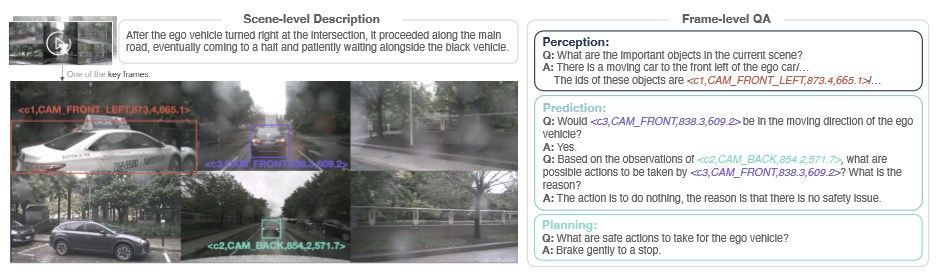
図5：DriveLM-nuScenes の全体構成。データセットは、シーンレベルの記述とフレームレベルの QA からなり、後者は知覚、予測、計画の 3 つの部分に分けられる。オブジェクトは c タグを用いて符号化される。c タグには、識別子、所属するカメラ、および対応するカメラフレームにおける 2D バウンディングボックスの中心座標が含まれる。
図中ラベル：Scene-level Description＝シーンレベルの記述（「自車は交差点で右折した後、幹線道路に沿って進み、最終的に停止して黒い車両の横で辛抱強く待っていた。」）、One of the key frames＝キーフレームの 1 つ、Frame-level QA＝フレームレベルの QA。Perception（知覚）：「Q：現在のシーンで重要なオブジェクトは何か？ A：自車の左前方に動いている車がある／… これらのオブジェクトの ID は <c1,CAM_FRONT_LEFT,873.4,665.1>／…」。Prediction（予測）：「Q：<c3,CAM_FRONT,838.3,609.2> は自車の進行方向に入るか？ A：はい。 Q：<c2,CAM_BACK,854.2,571.7> の観測に基づくと、<c3,CAM_FRONT,838.3,609.2> がとりうる行動は何か？ その理由は何か？ A：行動は何もしないことであり、その理由は安全上の問題がないからである。」Planning（計画）：「Q：自車がとるべき安全な行動は何か？ A：緩やかにブレーキをかけて停止する。」
B.2 収集方法
アノテーション過程では、ラベリング作業に運転経験のある人員を起用する。アノテータには、nuScenes の 6 台のカメラの画像をつなぎ合わせた結果をソースデータとして提供する。図6（左）に示すように、アノテーション過程を 3 つのステップに分ける。すなわち、動画クリップからキーフレームを選択し、これらのキーフレーム内でキーオブジェクトを選び、その後キーフレームにおけるフレームレベルの QA をアノテーションする。これに続いて、データの信頼性を確保するために複数ラウンドの品質チェックを実施し、図6（右）に示すように合格データに後処理の手順を施す。このパイプラインの具体的な詳細を以下で紹介する。
キーフレームの選択。この過程では、アノテータに動画クリップ全体を確認してもらい、シーン情報が豊富で将来の状態変化を示唆する可能性のあるキーフレームを特定してもらう。同時に、アノテータには動画クリップ全体を通した自車の行動をラベル付けするよう指示する。この部分が、我々のシーンレベルの記述の基礎となる。
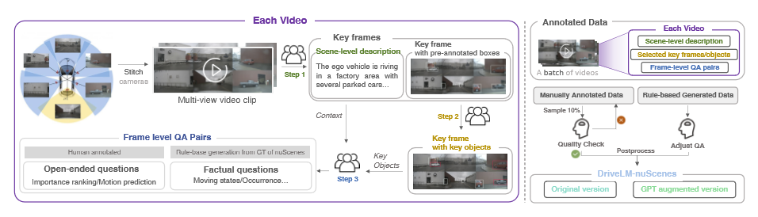
図6：（左）3 段階のアノテーション工程のパイプライン。各動画について、アノテータにキーフレーム、キーオブジェクト、QA 属性を段階的にアノテーションしてもらう。（右）品質チェックと後処理の工程。アノテーション済みデータをバッチに分割し、各バッチには 8 本の動画クリップとその関連アノテーションが含まれる。厳格な品質チェックを行い、後処理を経て、最終的に DriveLM-nuScenes データセットの 2 つのバージョンを得る。
図中ラベル：Each Video＝各動画、Stitch cameras＝カメラ映像をつなぎ合わせる、Multi-view video clip＝マルチビュー動画クリップ、Key frames＝キーフレーム、Scene-level description＝シーンレベルの記述、The ego vehicle is riving in a factory area with several parked cars…＝自車は駐車車両が数台ある工場エリアを走行している…、Key frame with pre-annotated boxes＝事前アノテーション済みボックス付きのキーフレーム、Step 1/2/3＝ステップ 1/2/3、Context＝文脈、Key frame with key objects＝キーオブジェクト付きのキーフレーム、Key Objects＝キーオブジェクト、Frame level QA Pairs＝フレームレベルの QA ペア、Human annotated＝人手によるアノテーション、Rule-base generation from GT of nuScenes＝nuScenes の GT からのルールベース生成、Open-ended questions＝自由回答形式の質問、Importance ranking/Motion prediction＝重要度ランキング／動き予測、Factual questions＝事実質問、Moving states/Occurrence…＝移動状態／出現…、Annotated Data＝アノテーション済みデータ、A batch of videos＝動画のバッチ、Selected key frames/objects＝選択されたキーフレーム／オブジェクト、Frame-level QA pairs＝フレームレベルの QA ペア、Manually Annotated Data＝人手アノテーションデータ、Rule-based Generated Data＝ルールベース生成データ、Sample 10%＝10% を抽出、Quality Check＝品質チェック、Adjust QA＝QA を調整、Postprocess＝後処理、Original version＝オリジナル版、GPT augmented version＝GPT 拡張版
キーオブジェクトの選択。このアノテーション工程では、キーフレーム内で自車の運転に関連するオブジェクトを特定するようアノテータに指示する。これをキーオブジェクトと呼ぶ。正確性を確保するため、nuScenes［6］の正解カテゴリに基づく事前アノテーション済みのバウンディングボックスを提供する。アノテータは、正解に含まれていないオブジェクトであっても、重要と判断した場合にはキーオブジェクトとして指定する柔軟性も持つ。
QA のラベル付け。QA のラベル付け工程では、事実質問と自由回答形式の質問という 2 種類の質問セットがある。事実質問については、ルールベースの手法で回答を生成する。自由回答形式の質問については、綿密に設計された質問に人手でアノテーションするようアノテータに指示する。人手でアノテーションする質問の大半には選択肢が用意されており、そのような場合でも柔軟性を確保するため、回答の選択肢に「その他 - 自由記入（Other - Fill in the Blank）」の選択肢を含めている。さらに自由形式の質問も取り入れ、アノテータが現在のフレームについて独自の問いを作れるようにしている。
品質チェック。我々はデータの品質を最優先する。各アノテーション工程で明確な基準を定め、自動的なチェック戦略を実装することに加えて、厳格な人手による品質チェックを実施する。最終データはバッチにまとめ、各バッチは 8 本の動画クリップと、そのシーンレベルの記述、8 本の動画クリップから選ばれたキーオブジェクト付きのキーフレーム、および各キーフレームに対応する QA ペアから構成される。品質チェックの検査員には明確な基準を提示し、これらの基準に基づいてデータの適格性を評価するよう指示する。人手でアノテーションされたデータについては、あるバッチで人手アノテーションの正確さが期待を下回った場合、発生した問題についてのフィードバックをまとめ、アノテータにそのバッチ全体の再アノテーションを依頼する。正解から生成されたデータについては、品質検査員に、一貫性のない、あるいは不合理な QA ペアを人手で修正するよう指示する。
後処理。アノテータは中国語話者であるため、ラベル付けされたデータを取得した後に英語へ翻訳する必要がある。まず、語彙表を用いて中国語と英語の対応付けを確立する。対応付けに成功しなかったテキストについては GPT-3.5 を用いて翻訳し、その後 GPT の出力に対して人手でのチェックと修正を行う。また、表6 に示すプロンプトを用いて GPT-3.5 で拡張したバージョンも提供する。
Messages = [
{ "role": "system", "content": f""" You are an English improver. """ },
{ "role": "user", "content": f""" I have a question and answer that I need you to help me modify and embellish, please make a few simple changes to the content in written language and keep the meaning same, you only need to answer the changes to: {QA}"""}]（訳注：プロンプトの和訳 system：「あなたは英語の改善者です。」 user：「修正して手を加えてほしい質問と回答があります。意味は同じまま、書き言葉として内容に簡単な変更をいくつか加えてください。次のものに対する変更点だけを答えればよいです：{QA}」）
表6：DriveLM-nuScenes の GPT 改善版のためのプロンプト。50 種類のプロンプトを試し、このパターンを改善を行うための最終的なものとして選択した。
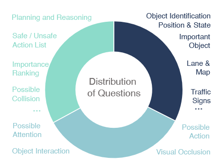
図7：知覚（Perception）、予測（Prediction）、計画（Planning）の質問分布：本データセットの質問は運転タスクのさまざまな具体的側面を網羅しており、大きく知覚・予測・計画に分類される。これらの質問の大部分は人間のアノテータによってアノテーションされており、人間らしい運転推論の代理指標として適している。
図中ラベル：Distribution of Questions＝質問の分布、Object Identification Position & State＝オブジェクトの識別・位置と状態、Important Object＝重要オブジェクト、Lane & Map＝車線と地図、Traffic Signs＝交通標識、Possible Action＝起こりうる行動、Visual Occlusion＝視覚的遮蔽、Object Interaction＝オブジェクト間の相互作用、Possible Attention＝注意を向けうる対象、Possible Collision＝起こりうる衝突、Importance Ranking＝重要度ランキング、Safe / Unsafe Action List＝安全／危険な行動のリスト、Planning and Reasoning＝計画と推論
B.3 統計と事実
本節では、DriveLM-nuScenes の QA カテゴリについて、タスクレベルとオブジェクトレベルの両方で分布分析を行う。さらにタスクレベルについては、この分類基準のもとでのすべての QA のテンプレートを提示する。結果は、我々の QA カテゴリが豊富であり、自動運転のさまざまな側面を網羅していることを示している。さらに、論理的関係が豊富であることから、グラフ構造の QA を構築するのに十分である。
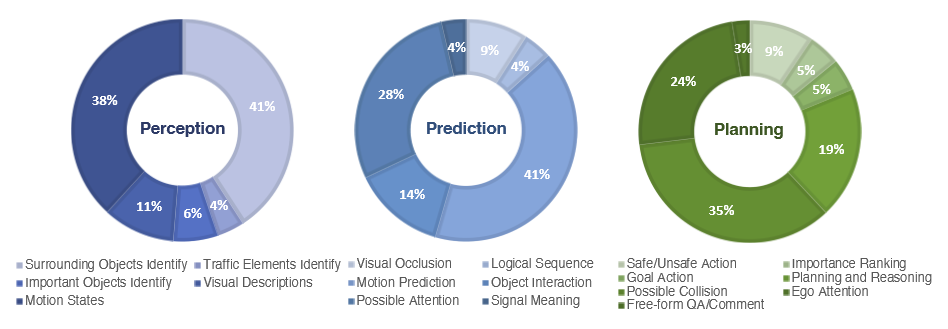
図8：DriveLM-nuScenes における、タスク別の質問タイプの分布。質問を知覚・予測・計画の各タスクに分類し、それぞれをさらに具体的な質問タイプに細分化している。
図中ラベル：Perception＝知覚、Prediction＝予測、Planning＝計画、Surrounding Objects Identify＝周囲オブジェクトの識別、Traffic Elements Identify＝交通要素の識別、Important Objects Identify＝重要オブジェクトの識別、Visual Descriptions＝視覚的記述、Motion States＝運動状態、Visual Occlusion＝視覚的遮蔽、Logical Sequence＝論理的順序、Motion Prediction＝動き予測、Object Interaction＝オブジェクト間の相互作用、Possible Attention＝注意を向けうる対象、Signal Meaning＝信号の意味、Safe/Unsafe Action＝安全／危険な行動、Importance Ranking＝重要度ランキング、Goal Action＝目標行動、Planning and Reasoning＝計画と推論、Possible Collision＝起こりうる衝突、Ego Attention＝自車の注意、Free-form QA/Comment＝自由形式の QA／コメント
タスクレベル。DriveLM-nuScenes は、自動運転のさまざまな側面を包含し、人間の運転ロジックの全段階をつなぐベンチマークを構成している。この側面をより深く掘り下げるため、タスクレベルでの詳細な QA タイプの分布を図8 に示す。さらに理解を助けるため、P3 の全段階における QA テンプレートの例を表7 に示す。
（訳注：表7 は原文では枠囲みのテキストで、複数ページにわたる。Q＝質問、A＝回答。<c1,CAM_BACK,827.5,484.2> のようなオブジェクト識別子は原文のまま記載した。）
知覚（Perception）
周囲オブジェクトの識別（Surrounding Objects Identify）
Q：現在のシーンを説明してください。
A：自車の後方に動いている車が 2 台、前方にバリアが 2 つあります。
Q：自車の左前方／右後方／… にあるオブジェクトは何ですか？
A：自車の左前方にバリアが 2 つあります。
Q：自車の右前方／左後方／… にトラフィックコーン／動いている車／… はありますか？
A：いいえ。
交通要素の識別（Traffic Elements Identify）
Q：前方の視野に交通要素はありますか？
A：はい、前方の視野にいくつかの交通要素があります。
Q：前方の視野にあるすべての交通要素を識別し、分類し、その状態を判定し、それぞれを囲むバウンディングボックスを予測してください。出力は (c, s, x1, y1, x2, y2) の形式のリストとし、c はカテゴリ、s は状態を表し、x1, y1, x2, y2 は中心点に対するボックスの左上隅と右下隅のオフセットです。
A：前方の視野に交通要素が 3 つあります。これらの交通要素の情報は [(road sign, go straight, 907.58, 590.67, 992.54, 630.95)...] です。
重要オブジェクトの識別（Important Objects Identify）
Q：現在のシーンにおける重要なオブジェクトは何ですか？それらのオブジェクトは今後の推論と運転判断で考慮されます。
A：自車の後方に駐車中のトラックがあります… これらのオブジェクトの id は <c1,CAM_BACK,827.5,484.2>… です。
Q：現在のシーンにおける重要オブジェクトの相対的な位置関係はどうなっていますか？
A：<c3,CAM_FRONT,689.2,527.5> は <c1,CAM_BACK,827.5,484.2> の前方にあります…
Q：シーン内で各重要オブジェクトはどの車線上にありますか？
A：<c2,CAM_FRONT,820.8,473.3> は自車線上にあります…
視覚的記述（Visual Description）
Q：<c2,CAM_FRONT_LEFT,415.8,580.8>/... の視覚的な記述は何ですか？
A：自転車に乗った歩行者。
運動状態（Motion State）
Q：自車の前方／右前方／… にある車／歩行者／… の状態はどうなっていますか？
A：多くの車が駐車しています。
Q：オブジェクト <c1,CAM_FRONT,920.0,509.2>/... の観測された状態は何ですか？
A：移動中。
Q：オブジェクト <c1,CAM_FRONT,920.0,509.2>/... の移動状態は何ですか？
A：直進中。
予測（Prediction）
視覚的遮蔽（Visual Occlusion）
Q：<c1,CAM_FRONT,707.5,472.5>/... によって遮蔽されている可能性が最も高いオブジェクトはどれですか？このオブジェクトは自車に影響しますか？このオブジェクトに基づくと、自車のどの行動が危険ですか？
A：<c1,CAM_FRONT,840.8,507.5> の前方にあるオブジェクト、はい、前方への加速。
論理的順序（Logical Sequence）
Q：自車が次に到達しうる位置へ向かうとき、自車が最初に注意すべきオブジェクトは何ですか？自車が最初に注意したオブジェクトの状態は何で、自車はどのような行動をとるべきですか？自車が次に到達しうる位置へ向かうとき、自車が 2 番目に注意すべきオブジェクトは何ですか？自車が 2 番目に知覚したオブジェクトの状態は何で、自車はどのような行動をとるべきですか？自車が 3 番目に注意すべきオブジェクトは何ですか？自車が 3 番目に知覚したオブジェクトの状態は何で、自車はどのような行動をとるべきですか？
A：まず <c2,CAM_FRONT,514.7,462.2> に注意します。その状態は交通標識なので、自車は減速して直進すべきです。次に <c3,CAM_FRONT,950.3,613.1> に注意します。その状態は交通標識なので、自車は減速して直進すべきです。3 番目に <c1,CAM_FRONT,707.5,472.5> に注意します。その状態は直進中なので、自車は減速して直進すべきです。
動き予測（Motion Prediction）
Q：<c1,CAM_FRONT,920.0,509.2>/... は自車の進行方向上にあるでしょうか？
A：はい。
Q：<c1,CAM_FRONT,920.0,509.2>/... の将来の状態は何ですか？
A：直進を続ける。
Q：<c2,CAM_FRONT,1223.3,598.3>/... は <c1,CAM_BACK,514.2,503.3>/... の進行方向上に来るでしょうか？
A：いいえ。
オブジェクト間の相互作用（Object Interaction）
Q：<c2,CAM_FRONT,1223.3,598.3>/... は <c1,CAM_BACK,514.2,503.3>/... に基づいて運動状態を変えるでしょうか？
A：いいえ。
Q：<c1,CAM_BACK,514.2,503.3>/... の観測に基づくと、<c2,CAM_FRONT,1223.3,598.3>/... がとりうる行動は何ですか？その理由は何ですか？
A：行動は同じ速度で進み続けることで、理由は安全上の問題がないからです。
Q：<c4,CAM_FRONT,1071.2,346.2>/... の観測に基づくと、<c1,CAM_FRONT,1126.7,515.0>/... はどのような行動をとる可能性がありますか？
A：行動は同じ速度で進み続けることで、理由は安全上の問題がないからです。
注意を向けうる対象（Possible Attention）
Q：このシナリオでは、<c3,CAM_FRONT,400.1,717.2>/... を考慮する可能性が最も高いオブジェクトはどれですか？
A：自車。
Q：<c1,CAM_BACK,514.2,503.3>/... は <c3,CAM_FRONT,400.1,717.2>/... を考慮に入れるでしょうか？
A：いいえ。
Q：<c1,CAM_FRONT,985.8,516.7>/... を自らの判断に最も関連があるとみなすのはどのオブジェクトですか？
A：自車。
Q：自車を除いて、<c1,CAM_FRONT,985.8,516.7>/... を自らの判断に最も関連があるとみなすのはどのオブジェクトですか？
A：<c2,CAM_FRONT,1217.5,511.7>。
信号の意味（Signal Meaning）
Q：<c2,CAM_BACK_LEFT,400.8,654.2>/... は何を意味していますか？
A：進入禁止。
Q：<c2,CAM_BACK_LEFT,400.8,654.2>/... はどのような種類の交通標識ですか？
A：トラフィックコーン。
計画（Planning）
安全／危険な行動（Safe/Unsafe Action）
Q：このシナリオで、自車がとるべき安全な行動は何ですか？
A：ブレーキをかけずに徐々に減速する、同じ速度で進み続ける。
Q：このシナリオで、自車がとると危険な行動は何ですか？
A：加速して直進する、急ブレーキをかける、後退する、右折する。
重要度ランキング（Importance Ranking）
Q：自車が考慮すべきオブジェクトの優先順位はどうなりますか？（降順）
A：<c2,CAM_FRONT,514.7,462.2>、<c3,CAM_FRONT,950.3,613.1>、<c1,CAM_FRONT,707.5,472.5>。
目標行動（Goal Action）
Q：自車の目標行動は何ですか？
A：直進する。
計画と推論（Planning and Reasoning）
Q：<c1,CAM_FRONT,920.0,509.2>/... に基づいて、自車はどのような行動をとりうるでしょうか？なぜその行動をとるのか、またその確率はどの程度ですか？
A：行動はブレーキをかけずに徐々に減速することで、理由は安全な車間距離を保つため、確率は高い。
Q：このシーンの <c3,CAM_FRONT,1591.1,441.8>/... に基づくと、自車の最も可能性の高い行動は何ですか？
A：ブレーキをかけずに徐々に減速する。
起こりうる衝突（Possible Collision）
Q：自車が同じ速度を保って直進した場合／加速して直進した場合／… に <c1,CAM_FRONT,920.0,509.2>/... と衝突する確率はどの程度ですか？
A：低い。
Q：自車のどのような行動が <c1,CAM_FRONT,920.0,509.2>/... との衝突につながりえますか？
A：加速して直進する。
自車の注意（Ego Attention）
Q：自車が注意を払うべき交通信号は何ですか？
A：なし。
Q：<c1,CAM_FRONT,920.0,509.2>/... は現在のシーンで自車が考慮すべきオブジェクトですか？
A：はい。
Q：自車は <c3,CAM_FRONT,400.1,717.2>/... を考慮に入れる必要がありますか？
A：はい。
自由形式の QA／コメント（Free-form QA/Comment）
Q：この状況は走行中の車両にどのような影響を与えますか？
A：道路シーンが複雑なので、減速してください。
Q：このシーンについてのコメントは何ですか？
A：交差点に歩行者がいるので、注意して道を譲ってください。
…
表7：タスクレベルでの DriveLM-nuScenes の質問テンプレート。表中のカテゴリは図8 のものに対応する。
オブジェクトレベル。DriveLM-nuScenes の QA はキーオブジェクトを中心に展開されるため、オブジェクトレベルでもいくつかの統計をとる。図9（左）にキーオブジェクトの種類の分布を示す。交通要素に関連する質問は他のカテゴリと比べて大きく異なるため、交通要素に関連する QA タイプと残りのカテゴリとで別々に統計をとる。その結果を図9（右）に示す。
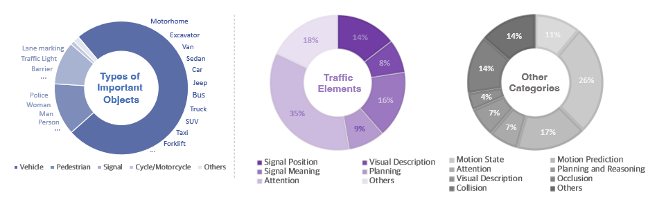
図9：（左）DriveLM-nuScenes におけるキーオブジェクトの分布。サブカテゴリは視覚的記述から抽出している。（右）DriveLM-nuScenes における、キーオブジェクトの種類ごとの質問タイプの分布。交通要素に関連する質問は他のカテゴリと大きく異なるため、交通要素に関連する QA タイプと残りのカテゴリとで別々に統計をとっている。
図中ラベル：Types of Important Objects＝重要オブジェクトの種類、Vehicle＝車両、Pedestrian＝歩行者、Signal＝信号、Cycle/Motorcycle＝自転車／オートバイ、Others＝その他、Motorhome＝キャンピングカー、Excavator＝掘削機、Van＝バン、Sedan＝セダン、Car＝乗用車、Jeep＝ジープ、Bus＝バス、Truck＝トラック、SUV＝SUV、Taxi＝タクシー、Forklift＝フォークリフト、Police＝警察官、Woman＝女性、Man＝男性、Person＝人、Lane marking＝車線標示、Traffic Light＝信号機、Barrier＝バリア、Traffic Elements＝交通要素、Signal Position＝信号の位置、Signal Meaning＝信号の意味、Attention＝注意、Visual Description＝視覚的記述、Planning＝計画、Other Categories＝その他のカテゴリ、Motion State＝運動状態、Motion Prediction＝動き予測、Planning and Reasoning＝計画と推論、Occlusion＝遮蔽、Collision＝衝突
C DriveLM-CARLA
本節では、データセットの構成と収集方法を含め、DriveLM-CARLA の詳細を紹介する。
C.1 データセットの構成
DriveLM-CARLA は、相互に結合されたグラフで構造化された、自動生成のフレームレベルの質問応答ペアから構成される。グラフ構造は図10 に示されている。現行バージョンでは、データセットは道路レイアウト、一時停止標識、信号機、車両に関する質問から構成される。将来のバージョンでは、静的オブジェクト、天候、交通標識などのより多くのカテゴリにデータセットを拡張できる。
データ生成プロセスに運転シミュレータ CARLA を利用することで、人手による作業を一切伴わずに、スケーラブルなアノテーションとデータが得られる。さらに本データセットは、セマンティックセグメンテーション、深度マップ、LiDAR など CARLA のさまざまなセンサ出力をサポートしており、異なるネットワークアーキテクチャの学習に用いることができる。グラフ内の各質問は状況推論を促すように設計されており、後続の質問に答えるうえで役立ちうる。DriveLM-nuScenes と同様に、各質問は知覚・予測・計画のいずれかに分類できる。各 QA ペアについて、対応する質問と回答に加えて、その QA ペアがオブジェクトに関するものである場合はオブジェクト ID も保存する。この ID は時間を通じて一貫しており、将来の研究におけるオブジェクト追跡と時間的推論を可能にする。加えて、グラフの効率的な走査を可能にするため、グラフ内の親質問・子質問との関係も記録している。
C.2 エキスパートアルゴリズム：PDM-Lite
TransFuser++［36］で用いられた特権情報を利用するルールベースのエキスパートのような従来の CARLA エキスパートアルゴリズムは、CARLA Leaderboard 1.0 に実装されたシナリオしか解けないのに対し、PDM-Lite［4］は Leaderboard 2.0 に存在する 38 のシナリオすべてに対処するように設計されている。PDM-Lite は 6 つの異なる段階から構成され、図11 にまとめている。
経路計画。まず PDM-Lite は、リーダーボードモジュールから与えられる疎な目標点（最大 200m 間隔）をもとに、A* 計画アルゴリズムを用いて、空間的に等間隔な点の形で密な経路を生成する。この計画は CARLA が提供する町の HD マップに基づく。さらに、走行予定のこのルートの各区間に、制限速度や次の信号機／一時停止標識までの距離などの情報を付加する。既定の経路から外れる必要があるシナリオ（例：Accident, ConstructionObstacle, ParkedObstacle, VehicleOpensDoor, AccidentTwoWays, ConstructionObstacleTwoWays, ParkedObstacleTwoWays, VehicleOpensDoorTwoWays, YieldToEmergencyVehicle）に対処するため、シナリオが生成されるルートの短い区間を隣接車線の方へ横方向にずらす。
エージェント予測。PDM-Lite は、動的エージェントの予測を 2s のホライズン、20Hz の時間分解能で生成する。他のアクターの経路や制御は事前にはわからないため、それらは直前の制御を維持し、近い将来も同様の制御を適用すると仮定する。PDM-Lite は、［8］から採ったパラメータをもつ運動学的自転車モデルを用い、［36］のエキスパートと同様に、この一定行動の仮定のもとで他のエージェントの運動を予測する。予測の対象とするのは、自エージェントから 50m 以内のアクターのみである。
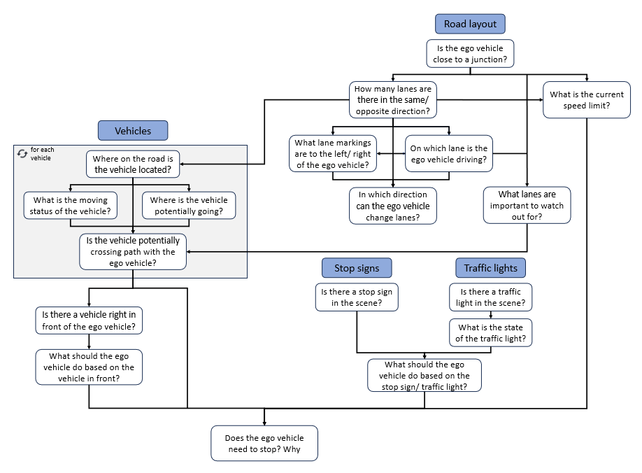
図10：CARLA グラフの詳細なフロー。DriveLM-CARLA の完全なグラフを示す。このグラフは、道路レイアウト、信号機、一時停止標識、車両に関する質問と回答から構成される。
図中ラベル：Road layout＝道路レイアウト、Is the ego vehicle close to a junction?＝自車は交差点に近いか？、How many lanes are there in the same/opposite direction?＝同方向／対向方向の車線はいくつあるか？、What is the current speed limit?＝現在の制限速度は？、What lane markings are to the left/right of the ego vehicle?＝自車の左／右にはどのような車線標示があるか？、On which lane is the ego vehicle driving?＝自車はどの車線を走行しているか？、In which direction can the ego vehicle change lanes?＝自車はどちらの方向に車線変更できるか？、What lanes are important to watch out for?＝注意すべき重要な車線はどれか？、Vehicles＝車両、for each vehicle＝各車両について、Where on the road is the vehicle located?＝その車両は道路上のどこにいるか？、What is the moving status of the vehicle?＝その車両の移動状態は？、Where is the vehicle potentially going?＝その車両はどこへ向かう可能性があるか？、Is the vehicle potentially crossing path with the ego vehicle?＝その車両は自車と進路が交差する可能性があるか？、Is there a vehicle right in front of the ego vehicle?＝自車の直前に車両がいるか？、What should the ego vehicle do based on the vehicle in front?＝前方の車両に基づいて自車は何をすべきか？、Stop signs＝一時停止標識、Is there a stop sign in the scene?＝シーン内に一時停止標識はあるか？、Traffic lights＝信号機、Is there a traffic light in the scene?＝シーン内に信号機はあるか？、What is the state of the traffic light?＝信号機の状態は？、What should the ego vehicle do based on the stop sign/traffic light?＝一時停止標識／信号機に基づいて自車は何をすべきか？、Does the ego vehicle need to stop? Why＝自車は停止する必要があるか？その理由は
IDM 目標速度。Intelligent Driver Model（IDM）［85］を用いて目標速度の提案を生成する。具体的には、元の IDM が先行アクターとして 1 台の車両のみを選択するのに対し、我々は自車の前方経路と交差するすべての車両、歩行者、青以外の信号機、一時停止標識に対して IDM を反復的に適用する。先行アクターが選択されたら、表8 にまとめたパラメータを用いて各アクターに対する目標速度を決定する。得られた速度の最小値を、そのタイムステップにおける最終的な目標速度の提案として用いる。
シミュレーション。縦方向コントローラ（後述）と運動学的自転車モデルを交互に適用することで、提案された目標速度での軌跡を 2s にわたり 20Hz でシミュレーションする。これにより、提案はクローズドループにおける自車バウンディングボックスの実際の予想系列に変換される。
スコアリング。すべてのアクターのバウンディングボックスを予測したので、シミュレーションした自車と他車両とのバウンディングボックスの交差を確認できる。これに従って自車の動きをスコア付けする。すなわち、先行車両でも後方からの追突車両でもない車両との交差を検出した場合、IDM の目標速度の提案を棄却し、代わりに目標速度をゼロに設定する。
| パラメータ | 値 | 説明 |
|---|---|---|
| \(v_0\) | 0.72 \(v_{\text{lane}}\) | 目標速度。制限速度の 72% |
| \(s_0\) | 4.0/2.0/6.0/4.0/2.0 m | 先行エージェントまでの目標正味距離 |
| \(T\) | 0.25/0.1/0.1/0.1/0.1 s | 先行エージェントまでの目標車間時間 |
| \(a\) | 24.0 ms−2 | 自車の最大加速度 |
| \(b_{v\le 6.02}\) | 8.7 ms−2 | \(v \le 6.02\) のときの自車の最大減速度 |
| \(b_{v\gt 6.02}\) | 3.72 ms−2 | \(v \gt 6.02\) のときの自車の最大減速度 |
| \(\delta\) | 4.0 | 加速度指数 |
表8：IDM による目標速度の提案。PDM-Lite は IDM を用いて目標速度を選択する。目標正味距離と目標車間時間のパラメータは、先行アクターの種類（車両、自転車／一時停止標識／信号機／歩行者／静的オブジェクト（例：工事標識））によって異なる。
コントローラ。車両の制御には、ステアリング、スロットル、ブレーキの 3 つの値が必要である。ステアリング値は、自車の位置、速度、経路から直接推定できる。そのために［36］と同様に横方向 PID コントローラを用い、前方の経路上で選択した点への角度を最小化する。スロットルとブレーキの予測には、現在速度と目標速度に基づいて抽出した特徴量を用いる線形回帰モデルを採用する。
結果。PDM-Lite の性能は、Leaderboard 2.0 の 20 本の公式検証ルートで評価する。3 つの異なるシードでの評価結果を表9 に示す。ルート 0-9 と 10-19 は天候条件を除いて同一であり、性能のばらつきを測る追加の尺度となる。PDM-Lite は特権情報を利用するため、その性能のばらつきは天候パラメータの違いによるものではなく、周囲の交通のランダムな初期化によるものである。
C.3 収集方法
本節では、データ収集とアノテーション工程の詳細を述べる。
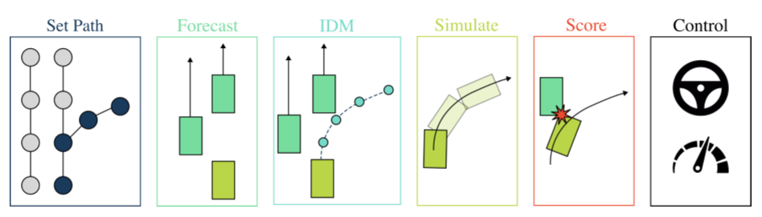
図11：PDM-Lite。CARLA Leaderboard 2.0 の全 38 シナリオを解く我々の新しいプランナは 6 つの段階からなり、その詳細は C.2 節で述べている。
図中ラベル：Set Path＝経路設定、Forecast＝予測、IDM＝IDM、Simulate＝シミュレーション、Score＝スコアリング、Control＝制御
| ルート | DS | RC | IS | NDS | NIS |
|---|---|---|---|---|---|
| 0 | 14.0 ±0.0 | 100.0 ±0.0 | 0.14 ±0.00 | 48.2 ±0.0 | 0.48 ±0.00 |
| 1 | 56.2 ±37.4 | 71.1 ±40.9 | 0.75 ±0.18 | 61.9 ±42.1 | 0.69 ±0.32 |
| 2 | 55.3 ±14.3 | 100.0 ±0.0 | 0.55 ±0.14 | 79.3 ±6.8 | 0.79 ±0.07 |
| 3 | 18.4 ±7.8 | 74.7 ±35.8 | 0.34 ±0.20 | 38.9 ±20.4 | 0.51 ±0.07 |
| 4 | 59.8 ±13.5 | 100.0 ±0.0 | 0.60 ±0.14 | 80.5 ±6.8 | 0.81 ±0.07 |
| 5 | 34.9 ±9.0 | 68.0 ±0.0 | 0.51 ±0.13 | 46.2 ±5.6 | 0.68 ±0.08 |
| 6 | 36.4 ±7.9 | 100.0 ±0.0 | 0.36 ±0.08 | 70.3 ±5.1 | 0.70 ±0.05 |
| 7 | 3.5 ±1.8 | 100.0 ±0.0 | 0.03 ±0.02 | 25.7 ±5.2 | 0.26 ±0.05 |
| 8 | 15.3 ±3.3 | 100.0 ±0.0 | 0.15 ±0.03 | 52.1 ±3.7 | 0.52 ±0.04 |
| 9 | 73.3 ±18.9 | 100.0 ±0.0 | 0.73 ±0.19 | 89.8 ±7.2 | 0.90 ±0.07 |
| 10 | 12.8 ±7.6 | 100.0 ±0.0 | 0.13 ±0.08 | 44.0 ±10.2 | 0.44 ±0.10 |
| 11 | 60.5 ±32.0 | 100.0 ±0.0 | 0.61 ±0.32 | 79.5 ±18.1 | 0.79 ±0.18 |
| 12 | 52.0 ±11.3 | 100.0 ±0.0 | 0.52 ±0.11 | 78.9 ±6.5 | 0.79 ±0.06 |
| 13 | 26.3 ±15.9 | 49.4 ±35.8 | 0.58 ±0.07 | 32.2 ±28.5 | 0.57 ±0.11 |
| 14 | 39.4 ±20.8 | 100.0 ±0.0 | 0.39 ±0.21 | 69.0 ±11.0 | 0.69 ±0.11 |
| 15 | 24.0 ±17.2 | 68.0 ±0.0 | 0.35 ±0.25 | 35.8 ±13.8 | 0.53 ±0.20 |
| 16 | 42.0 ±0.0 | 100.0 ±0.0 | 0.42 ±0.00 | 73.9 ±0.0 | 0.74 ±0.00 |
| 17 | 4.1 ±1.2 | 95.3 ±6.7 | 0.04 ±0.01 | 25.6 ±5.5 | 0.27 ±0.04 |
| 18 | 12.1 ±7.9 | 100.0 ±0.0 | 0.12 ±0.08 | 43.7 ±15.6 | 0.44 ±0.16 |
| 19 | 86.7 ±18.9 | 100.0 ±0.0 | 0.87 ±0.19 | 94.9 ±7.2 | 0.95 ±0.07 |
| 平均 | 36.3 ±28.1 | 91.3 ±21.1 | 0.41 ±0.28 | 58.5 ±25.9 | 0.63 ±0.22 |
表9：CARLA 公式検証ルートにおける PDM-Lite。各ルートの運転性能として、運転スコア（Driving Score：DS）、違反スコア（Infraction Score：IS）、ルート完走率（Route Completion：RC）、正規化運転スコア（Normalized Driving Score：NDS）、正規化違反スコア（Normalized Infraction Score：NIS）を、合計 3 シードでの平均および標準偏差とともに示す。ルート 0-9 はルート 10-19 と、天候（PDM-Lite では無視される）と交通の挙動を除いて同一である。
シミュレータの設定。データセットの生成には、Leaderboard 2.0［22］とともに CARLA シミュレータ（バージョン 0.9.14）を利用する。Leaderboard 2.0 は 2 つの新しい大規模マップと一連の新しいシナリオを導入しており、学習環境と評価環境の多様性を高めている。Town 12 は学習用の町として用いられ、Town 13 は評価用に確保されている。各町は 10 x 10 平方キロメートルの面積をもち、実世界の運転条件を再現するために、田園、住宅地、都市景観などの多様な環境を含む。CARLA チームは、合計 780.6 キロメートルに及ぶ 90 本の学習ルートと、247.6 キロメートルの 20 本の評価ルートを提供している。すべてのルートには複数の運転シナリオが組み込まれている。我々はこれらのルートを長さ約 150 メートルの短い区間に分割し、同じ位置で始まり同じ位置で終わるルートを除外した。Leaderboard 2.0 内のトラフィックマネージャは、自車の周囲に 'car' エンティティのみからなるランダムな背景交通を初期化する。データセットをより多様にするため、'trucks'、'vans'、'bicycles'、'motorcycles' を含む追加の車両クラスを導入する。さらに、現実的な運転条件を模倣するため、学習ルートと評価ルートのそれぞれに対してランダム化した天候設定を実装した。ただし、一部のマップ領域で照明が不十分であるため、夜間の設定は本研究から除外した。低照度の条件では、画像内の特定のオブジェクトの可視性に関する情報を得ることが難しいため、自動ラベル付け処理の正確さが大きく損なわれる。
データ収集。各ルートでエキスパートを実行し、包括的なセンサデータを収集する。センサデータには次のものが含まれる：(1) RGB 画像、(2) LiDAR 点群、(3) セマンティックセグメンテーション画像、(4) 深度マップ、(5) 鳥瞰図（BEV）セマンティックセグメンテーション。DriveLM-Agent は RGB 画像のみを活用するが、TransFuser++ の再学習には補助タスクのための追加データが必要である。加えて、シーン内の静的・動的オブジェクトの状態に関する特権情報を、以下のようにシミュレータから抽出する。
- 自車：3D バウンディングボックス、速度、ブレーキ、id
- 他車両：3D バウンディングボックス、BB 内の LiDAR 点の数、自車までの距離、速度、ステアリング、スロットル、ブレーキ、id、色、車種、車輪の数、信号機の状態、車線情報（すなわち、その車両がどの道路のどの車線を走行しているか）、交差点内にいるか否か、次の交差点までの距離、次の高レベルコマンド
- 歩行者：3D バウンディングボックス、BB 内の LiDAR 点の数、性別、年齢、自車までの距離、速度、id、車線情報
- 信号機：3D バウンディングボックス、自車までの距離、状態、自車に影響するか
- 一時停止標識：3D バウンディングボックス、自車までの距離、自車に影響するか
- 静止車両（駐車車両）：3D バウンディングボックス、車線情報
- ランドマーク（例：速度標識）：3D バウンディングボックス、自車までの距離、id、テキスト、値
- 天候：天候パラメータ
言語ラベル。シミュレータから抽出した情報に基づき、手作りの文テンプレートを用いて質問と回答を作成する。言語的な多様性を高め、それらの文構造への過学習を防ぐため、これらの文は GPT-4 のような現在の最先端の言語モデルでさらに拡張することもできる。ただし本研究では、拡張していないバージョンのデータセットを用いる。
D DriveLM-Metrics
本節では、DriveLM-Metrics を詳しく紹介する。DriveLM-Metrics は、\(P_{1-3}\) VQA 指標、行動タスク指標、動作タスク指標の 3 つに大別できる。
D.1 \(P_{1-3}\) VQA 指標
\(P_{1-3}\) の性能を一般的な VQA 指標を用いて評価し、さらに QA 結果を意味的により包括的に評価するため GPT スコアを導入する。加えて、我々の QA がグラフ構造をもつことを踏まえ、徹底した評価を行うために完全性（Completeness）スコアを提案する。
BLEU［64］は、生成テキストと 1 つ以上の参照テキストとの類似度を測る。生成テキスト中の n-gram を参照テキスト中の n-gram と比較することで動作し、適合率が高いほどよく一致していることを示す。ただし BLEU スコアは、意味的なニュアンスや語順の変化に鈍感である。
ROUGE_L［52］は、モデル出力と参照回答の最長共通部分列を用いてスコアを計算する。BLEU 指標と同様に、ROUGE は生成結果と標準的な参照との一致度を評価するために用いられるが、主な違いは ROUGE が再現率に基づく点である。
METEOR［45］は、適合率、再現率、語幹処理、同義性、語幹処理、および語順を考慮する。（訳注：原文で stemming が重複している。）モデル出力と参照との間のアラインメントを確立し、両者の 1-gram の一致を計算したうえで、チャンク単位に基づくペナルティを適用することで、よりきめ細かな評価を提供する。
CIDEr［86］は、BLEU とベクトル空間モデルの要素を組み合わせたものである。その基本的な考え方は、各文を 1 つの文書として扱い、その n-gram の TF-IDF ベクトルを計算し、コサイン類似度を用いて候補文と参照文の意味的な一貫性を測るというものである。CIDEr は異なる長さの n-gram 間の一致を捉え、TF-IDF の重み付けによってさまざまな n-gram の重要度を区別する。
SPICE［2］は、まず確率文脈自由文法（Probabilistic Context-Free Grammar）［38］を用いてテキストを構文依存木に解析し、次にその依存木をルールベースでシーングラフに写像する。シーングラフは元のテキスト中のオブジェクト、属性、およびそれらの関係を記述し、SPICE スコアは予測と正解から生成したシーングラフの F スコアとして計算される。
GPT スコアは、ChatGPT によって与えられる指標である。従来の指標は主に単語レベルの性能を評価するものであり、意味的なニュアンスを捉えられず、予想外の評価結果をもたらす可能性がある。ChatGPT の頑健な推論能力を活用し、予測の品質を測ってより合理的なスコアを導くために ChatGPT を用いる。ChatGPT には 0 から 100 の間の数値スコアを付けるようプロンプトで指示し、スコアが高いほど予測精度が高いことを示す。GPT スコア評価のための詳細なプロンプトを表10 に示す。
Messages = [
{ "role": "system", "content": f""" An evaluator who rates my answer based on the correct answer. """ },
{ "role": "user", "content": f""" Rate my answer based on the correct answer out of 100, with higher scores indicating that the answer is closer to the correct answer, and you should be accurate to single digits like 62, 78, 41, etc. This is the correct answer: {GT}. This is my answer: {Pred}. """}]（訳注：プロンプトの和訳 system：「正解に基づいて私の回答を採点する評価者。」 user：「正解に基づいて私の回答を 100 点満点で採点してください。スコアが高いほど回答が正解に近いことを示し、62、78、41 などのように 1 の位まで正確にしてください。これが正解です：{GT}。これが私の回答です：{Pred}。」）
表10：GPT スコアのためのプロンプト。これは DriveGPT4［102］で用いられたプロンプトとは異なるが、得られるスコアは同様である。
完全性（Completeness）は、あるフレームに関連付けられた正解の質問のうち、いくつに正しく回答できたかを考慮したスコアを与える。各 QA について、予測された回答のスコアが閾値を上回っていれば、その QA は「正しく回答された」とみなされ正しい予測となり、そうでなければ誤った予測となる。次に、予測の総数に対する正しい予測の数の比である正解率を計算する。我々の設定では、SPICE スコアを利用し、閾値を 0.5 に設定する。
D.2 行動タスク指標
行動予測は、分類正解率によって評価するとともに、全体の正解率をステアリング成分と速度成分に分解して評価する。
分類正解率は、行動予測タスクを評価するために用いる指標であり、行動の正解率、行動の速度、行動のステアリングから構成される。具体的には、自車の将来軌跡の正解は、鳥瞰図における座標 \((x, y)\) をもつ \(N\) 個の点の集合であり、\(\{(x_0, y_0), (x_1, y_1), ..., (x_N, y_N)\}\) と表記する。各点は、一定の時間間隔ごとの、現在位置に対する将来位置のオフセットを表す。そして、各時間間隔における \(x, y\) の距離を次のように独立に計算する。
\[ \{x, y\}_{dist} = ((\{x, y\}_1 - \{x, y\}_0), ..., (\{x, y\}_N - \{x, y\}_{N-1})) \tag{2} \]
\(x_{dist}\) と \(y_{dist}\) の平均は、あらかじめ定義されたビンのいずれかに写像される。各ビンは速度またはステアリングのいずれかのカテゴリに対応し、それぞれ \(B_{speed}\) および \(B_{steer}\) と表記する。最後に、この軌跡の速度カテゴリとステアリングカテゴリによって、行動カテゴリ \((B_{speed}, B_{steer})\) が構成される。これらを DriveLM-Agent が出力する行動と比較し、関連する正解率を計算する。
D.3 動作タスク指標
動作段階の性能を測るため、nuScenes と Waymo のベンチマークにおける標準的な指標、すなわち平均変位誤差と最終変位誤差（ADE、FDE）、および予測軌跡の衝突率を用いる。
ADE は平均変位誤差（Average Displacement Error）の略であり、すべての予測ホライズンにわたる予測軌跡と正解軌跡の間の平均 L2 距離を示す。これは 1 秒目、2 秒目、3 秒目における誤差の平均である。
FDE は最終変位誤差（Final Displacement Error）の略であり、最後の予測ステップ（3 秒目）における予測終点と真の終点との間のユークリッド距離を測る。
衝突率は、全テストフレームのうち、予測軌跡がオブジェクトと衝突するテストフレームがいくつあるかの割合を表す。本論文の表2 で報告している数値は、1 秒目、2 秒目、3 秒目における衝突率の平均である。
なお、ADE、FDE、衝突率の計算は、ST-P3［31］ではなく UniAD［32］で用いられた設定に従っていることに注意されたい。例えば、3 秒目における FDE と衝突率について、UniAD の設定ではそのタイムステップのみにおける誤差／衝突率を考慮するのに対し、ST-P3 の設定では 0.5、1、1.5、2、2.5、3 秒にわたる平均として誤差／衝突率を考慮する。詳細については UniAD リポジトリでの議論を参照されたい。さらに、（先行研究において）nuScenes 検証データセット全体で報告された誤差は、DriveLM-nuScenes の val 分割で報告された結果とは直接比較できないことにも注意されたい。後者は、意図の変化を伴うキーフレームのみからなる、nuScenes 検証データセットの難しいサブセットである。
E DriveLM-Agent
本節では、グラフプロンプティングの方式と軌跡のトークン化処理を含め、DriveLM-Agent の詳細を紹介する。
E.1 文脈を用いたプロンプティング
実装に関しては、リカレントネットワークで一般的に採用されている教師強制（teacher-forcing）の設定［44,82］に従い、DriveLM-Agent の学習時と推論時とで文脈の内容が異なる。学習時には、フレーム内の各エッジ \(e \in E\) について子 QA を取り出す。エッジ内の子質問には、正解の親 QA が文脈として付加される。学習では、文脈のないものも含めてすべての QA ペアを用いる。用いる目的関数は、言語モデリングの標準的な手法である次トークン予測である。推論時には、各子質問の入力として必要な文脈の予測を得るため、モデルを複数ラウンドにわたって対話的に適用する。具体的には、5 つの段階の質問を \(P_1, P_2, P_3, B, M\) の順に逐次的にモデルへ与える。この順序では、モデルは先行する段階から予測された回答を得て初めて、後続の段階の質問を推論できる。
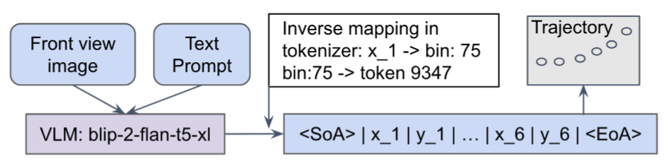
図12：DriveLM-Agent の詳細なアーキテクチャ。実世界の自車軌跡を blip-2-flan-t5-xl のトークン空間に埋め込むため、逆写像を設計している。
図中ラベル：Front view image＝前方視点画像、Text Prompt＝テキストプロンプト、Inverse mapping in tokenizer: x_1 -> bin: 75, bin:75 -> token 9347＝トークナイザにおける逆写像：x_1 → ビン 75、ビン 75 → トークン 9347、Trajectory＝軌跡
E.2 軌跡トークン化の詳細
グラフの構築に用いる言語モデルで行動系列（すなわち、自車の将来軌跡）を直接生成するため、RT-2［108］の手法を採用する。この処理には、連続的な軌跡の離散化とトークン化が伴う。
まず、nuScenes データセット内の将来軌跡の分布を分析する。連続的な (x, y) 座標空間を離散的な行動の集合に効果的に変換するため、各座標軸を 256 個の離散区間に分割する。この粒度により、言語モデルにとって扱いやすいトークン数を保ちつつ、十分な詳細度が確保される。
離散化された各ビンは、言語モデルの語彙内の一意のトークンに対応する。語彙内の数値トークンのトークン識別子（ID）を抽出する。一貫性を確保し、数値を表現する能力を保持するため、この対応付けの処理からは 1 桁のトークンを除外する。残りの数値トークンのうち、256 個のトークン ID からなる部分集合を軌跡データの表現に選ぶ。これらに加えて、軌跡系列の開始と終了を示すための 2 つの特殊トークン、すなわち軌跡開始（start-of-trajectory：SOT）トークンと軌跡終了（end-of-trajectory：EOT）トークンをそれぞれ導入する。このトークン化方式により、複雑な軌跡情報を言語モデルが処理できるトークン系列として符号化できる。この対応付けられた語彙を用いることで、言語モデルは一連のトークンを出力して将来軌跡系列の予測を生成でき、それらのトークンは座標空間へと逆変換される。
F 実験
本節では、本論文の4 節の各小節の実装の詳細、VQA 部分に関する追加の指標、追加のアブレーション、および計算量の比較を含め、実験の詳細を紹介する。
F.1 実装の詳細
ここでは、本論文の4 節の各小節の実験で用いた学習設定と検証設定の実装の詳細を説明する。
ファインチューニングの詳細。学習率を 0.0001 とし、学習率スケジューラは用いず、乱数シードを 1234 とし、その他の設定は LoRA［30］の既定の構成に従う。BLIP-2 モデルについては最大系列長 400 を用い、その他のハイパーパラメータは BLIP-2 の公式実装と同じままとする。
4.1 節、4.3 節、4.4 節の実験の実装の詳細。
学習時には、フレームごとにすべての QA を入力として利用し、そのうちの一部は文脈をもつ（\(P_{2,3}\)、\(B\)、\(M\) からの質問）。文脈は、リカレントネットワークで一般的に採用されている教師強制の設定［44,82］に従い、正解から抽出する。推論については、シナリオの複雑さがさまざまであるため、フレームあたりの \(P_{1-3}\) の QA 数はデータセット全体で非常に不均衡であり、DriveLM-nuScenes では分散が 260 を超える。この影響を均衡させるため、各フレームに関連付けられた QA の部分集合のみで GVQA スコアを計算する。QA の部分集合を抽出するため、各段階に一般的に関連付けられる質問に基づいて、段階ごとに QA パターンの集合を設計する。すべての検証フレームについて、各段階に、設計したパターンに一致する質問が少なくとも 1 つあることを保証する。この処理では、段階 \(P_1\) の質問を除き、他の段階のすべての質問が前の段階の QA からの文脈をもち、その回答は先行するステップでの予測から得られる。具体的なグラフ構造の例を 2 つ、図13 と図14 に示す。
4.2 節の実験の実装の詳細。モデルは 4.1 節、4.3 節、4.4 節と同じ方式で学習し、学習セットは DriveLM-nuScenes の train 分割である。推論時には、Waymo にはアノテーションが（質問すら）ないため、ルールベースの方法で質問を作成する。具体的には、DriveLM-nuScenes の知覚段階の汎用的な質問を Waymo 用の開始質問として再利用する。次に、回答の中に、「pedestrians」「cars」「trucks」など DriveLM-nuScenes のアノテーションと一致するオブジェクトがあるかどうかを探す。そして、一致したオブジェクトに基づいて質問を自動的に生成し、それらを予測段階と計画段階における後続の質問とする。具体的なグラフ構造の例を図15 に示す。
F.2 節の実験の実装の詳細。F.2 節の汎化実験では、グラフに 2 つの新しい質問を追加する：(1) Is there a person in the scene?（シーン内に人はいるか？）、(2) 1 つ目の質問の答えが yes であれば What should the vehicle do based on the pedestrian that is crossing the road?（道路を横断している歩行者に基づいて車両は何をすべきか？）と尋ね、答えが no であれば What should the ego vehicle do?（自車は何をすべきか？）と尋ねる。2 つ目の質問への回答は、最終的な行動質問の文脈に連結される。3 つの例を図16 に示す。
| 手法 | DriveLM-CARLA (\(B\)) | DriveLM-CARLA-ped (\(B\)) | ||||
|---|---|---|---|---|---|---|
| Acc. ↑ | Spd. ↑ | Str. ↑ | Acc. ↑ | Spd. ↑ | Str. ↑ | |
| TransFuser++［36］ | 70.19 | 73.29 | 90.68 | 8.72 | 8.72 | 100.00 |
| DriveLM-Agent | 59.63 | 61.50 | 78.26 | 4.59 | 4.59 | 100.00 |
| + Pedestrian QA | 52.17 | 55.28 | 77.64 | 27.04 | 27.04 | 100.00 |
| DriveLM-Agent (GT) | 60.25 | 65.22 | 80.12 | 20.92 | 20.92 | 100.00 |
| + Pedestrian QA | 60.25 | 65.22 | 80.12 | 92.35 | 92.35 | 100.00 |
表11：DriveLM-CARLA における汎化。新規の歩行者オブジェクトを含む DriveLM-CARLA-ped では、すべての手法の性能が低下するが、DriveLM-Agent は GVQA グラフに歩行者固有の質問を含めることで大幅に改善できる。move this to supp??（訳注：「これを補足資料に移す？？」という著者間の編集メモが原文キャプションに残っている。）
F.2 未見オブジェクトへの汎化
次に、新規オブジェクトへのゼロショット汎化を評価する。DriveLM-CARLA は、学習分割にも検証分割にも歩行者を一切含まずに収集されている。ここで、シーン内に歩行者が存在するフレームのみからなる DriveLM-CARLA-ped という新しいテストセットを生成する。正しい行動は、歩行者のために停止することである。
ベースライン。この実験では、DriveLM-Agent を CARLA における最先端手法である TransFuser++［36］と比較する。TransFuser++ は DriveLM-Agent と比べて、より大きな入力画像、追加の LiDAR センサ、およびいくつかの運転固有のアノテーション（深度、セマンティクス、3D バウンディングボックス、HD マップ）を用いる。しかし、こうしたタスク固有の入出力のため、TransFuser++ は基本の DriveLM-CARLA データセットでしか学習できず、学習時に一般的なコンピュータビジョンのデータを取り込めないため、汎化がより困難になる。
DriveLM-Agent。VLM のより汎用的なアーキテクチャを活かし、DriveLM-Agent の学習時には DriveLM-CARLA とともに COCO［53］と GQA［34］のサンプルを含める。いくつかのバージョンを比較する：(1) 推論時に新しい \(P_1\) の質問 'Is there a person crossing the road?'（道路を横断している人はいるか？）を追加する場合を調べる（'+ Pedestrian QA'）。(2) 上限として、推論時にモデルの予測の代わりに正解の \(P_{1-3}\) グラフをモデルに直接入力する。詳細については補足資料を参照されたい。
結果。結果を表11 に示す。TransFuser++ は DriveLM-CARLA と比べて DriveLM-CARLA-ped で苦戦しており、正解率は 70.19 からわずか 8.72 にまで低下する。DriveLM-Agent も 59.63 から 4.59 へと同様に低下する。しかし、歩行者 QA を追加すると、通常のシーンでの正解率はわずかに低下するものの、汎化設定での性能は 27.04 へと大きく向上する。これは主に、VLM がすべての歩行者を正しく検出できないことに起因する。このことは、近年公開された VLM［26,65］の大きな性能向上が、運転の領域においてさらに優れた汎化能力を支えうることを示している。加えて、グラフ内の各質問に対して完璧な文脈にアクセスできると仮定する特権設定で歩行者 QA を与えた場合、DriveLM-Agent は歩行者を含むフレームでほぼ完璧なスコア（20.92 → 92.35）を達成する。なお、DriveLM-CARLA-ped には直線道路を横断する歩行者しか含まれないため、すべてのモデルがステアリングクラス（常に straight）で 100% の正解率を得ている。
| 文脈 | DriveLM-nuScenes | |||||||||||||
|---|---|---|---|---|---|---|---|---|---|---|---|---|---|---|
| Off-the-Shelf BLIP-2 | DriveLM-Agent | |||||||||||||
| BLEU-4 ↑ | METEOR ↑ | CIDEr ↑ | ROUGE_L ↑ | SPICE ↑ | GPT ↑ | Comp. ↑ | BLEU-4 ↑ | METEOR ↑ | CIDEr ↑ | ROUGE_L ↑ | SPICE ↑ | GPT ↑ | Comp. ↑ | |
| None | 0.022 | 3.317 | 0.1185 | 7.205 | 4.336 | 42.97 | 1.064 | 51.89 | 35.81 | 2.463 | 66.79 | 42.56 | 71.39 | 30.04 |
| Graph | 0.022 | 3.882 | 0.0771 | 7.397 | 7.710 | 45.21 | 0.859 | 53.09 | 36.19 | 2.786 | 65.58 | 49.54 | 72.51 | 31.66 |
| GT | 0.022 | 4.397 | 0.0758 | 8.033 | 8.192 | 41.10 | 1.315 | 53.06 | 36.64 | 3.069 | 66.69 | 50.29 | 72.94 | 32.41 |
表12：グラフ構造の推論は VLM による VQA の改善を促進する。完全性（Comp.）は、1 フレームのデータにおいていくつの質問に正しく回答できたかを測る。改善の傾向は従来のさまざまな指標の間で一貫していないため、性能をより包括的に評価する GPT スコアを主要な指標とする必要がある。（訳注：原文の「consisten」は「consistent」の誤植。）
F.3 VQA におけるより多くの指標での結果
表12 では、本論文の表4 について、BLEU-4［64］、METEOR［45］、CIDEr［86］、ROUGE-L［52］での性能を示す。重要な観察の 1 つは、指標によって性能の傾向が異なり、改善がこれらすべての指標で一貫しているわけではないということである。これが、VQA の評価部分で GPT スコアを主要な指標として用いる動機となっている。
F.4 センサ構成をまたいだゼロショット汎化における段階別アブレーション
表14 では、本論文の表2 と同様のセンサ構成をまたいだゼロショット汎化において、より多くの文脈の設定を示す。重要な観察の 1 つは、行動タスクの正解率が高いほど、動作タスクの性能も良くなるということである。行動タスクの文脈を増やした場合、正解率の向上は主に速度の正解率の向上に由来し、それが最終的に FDE スコアに影響する。
F.5 DriveLM-nuScenes で評価したその他の VLM
| Table A. ベース VLM | 行動 | 動作 | 行動（\(B\)） | 動作（\(M\)） | |||
|---|---|---|---|---|---|---|---|
| 文脈 | 文脈 | Acc. ↑ | Speed ↑ | Steer ↑ | ADE ↓ | Col. ↓ | |
| blip-2-flan-t5-xl | Graph | \(B\) | 57.49 | 69.89 | 80.63 | 1.74 | 1.89 |
| LLaMA-Adapter V2 | Graph | \(B\) | 55.31 | 61.97 | 81.43 | 1.86 | 2.03 |
| LLaMA-Adapter V2* | Graph | \(B\) | 57.83 | 67.21 | 83.49 | 1.75 | 1.69 |
表13：DriveLM-nuScenes におけるその他の VLM の評価。LLaMA-Adapter V2 をベースモデルとした場合、複数フレームを入力として用いることでわずかな改善が見られる。（訳注：表の左上の「Table A.」は原文に残った参照表記で、* は複数フレーム入力を指すと考えられるが原文に説明はない。）
| 手法 | 行動 | 動作 | 行動（\(B\)） | 動作（\(M\)） | |||
|---|---|---|---|---|---|---|---|
| 文脈 | 文脈 | Acc. ↑ | Speed ↑ | Steer ↑ | ADE ↓ | FDE ↓ | |
| Command Mean | - | - | - | - | - | 7.98 | 11.41 |
| UniAD-Single | - | - | - | - | - | 4.16 | 9.31 |
| BLIP-RT-2 | - | - | - | - | - | 2.78 | 6.47 |
| DriveLM-Agent | None | \(B\) | 35.70 | 43.90 | 65.20 | 2.76 | 6.59 |
| \(P_1\) | \(B\) | 38.20 | 43.67 | 70.74 | 2.67 | 6.41 | |
| \(P_2\) | \(B\) | 39.52 | 44.20 | 78.67 | 2.62 | 6.19 | |
| \(P_3\) | \(B\) | 34.62 | 41.28 | 64.55 | 2.85 | 6.89 | |
| \(P_{1-3}\) | \(B\) | 39.73 | 54.29 | 70.35 | 2.63 | 6.17 | |
| BLIP-RT-2 | - | \(B^*\) | 100.0 | 100.0 | 100.0 | 2.41 | 5.79 |
表14：センサ構成をまたいだゼロショット汎化。\(B^*\) は、動作タスクの文脈として正解の行動 QA を用いることを表す。DriveLM-nuScenes で学習した後、Waymo の val セットからランダムにサンプリングした 1k フレームでの結果である。重要な観察は、行動タスクの正解率が高いほど、動作タスクの性能も良くなるということである。
提案する DriveLM-Agent の汎用性を検証し、このタスクにおいて動画入力がモデルの性能向上に役立つかを探るため、単一フレームと複数フレームの両方の入力に対応している LLaMA-Adapter V2 (7B)［I］を選択した。表13 の結果（9 学習エポック以内）は、BLIP-2 と同程度の性能を示している。（訳注：引用番号「I」は原文のまま。参照が解決されていないと思われる。）
なお、DriveLM-nuScenes には多種多様な質問タイプがあるため、各質問を分析することは法外なコストがかかる。
代わりに、表14 で各段階（\(P_{1-3}\)）の有効性に関するアブレーションと、代表的な質問ごとの分析を提供した。
現在の質問設定のもとで QA の性能（P1-3）を改善することは容易ではなく、また、それが最終タスクの性能（行動と動作）にほとんど影響しないことがわかったことは認めざるを得ない。
このことから、質問の設定はさらに探究する価値があるかもしれず、よく設定された質問があれば、モデルは「正しくプロンプトされ」、シーンを理解して下流タスクをよりうまく遂行できる可能性があるという着想を得た。
F.6 計算量
本論文の表5 では、DriveLM-Agent と UniAD-Single の計算量の比較を示している。今後の方向性としては、視覚トークンをキャッシュし、異なる質問パターンをバッチ処理することが考えられ、これにより推論時間を根本的に高速化できる。
G 定性的結果
本節では、DriveLM-nuScenes での VQA、Waymo でのセンサデータをまたいだ汎化結果、DriveLM-CARLA での未見オブジェクトへの汎化結果を含め、実験の定性的結果を示す。
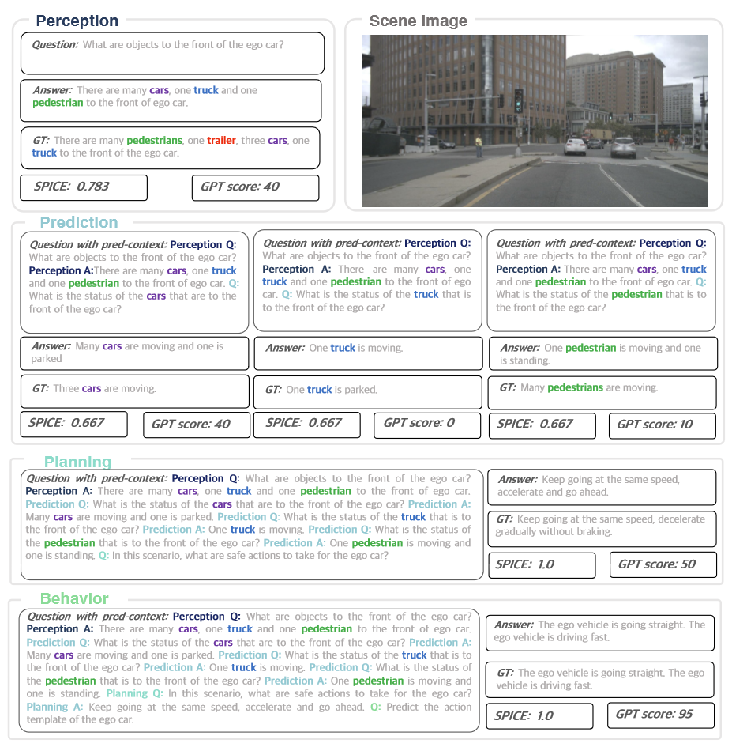
図13：DriveLM-nuScenes における詳細な定性的結果。グラフプロンプティングの過程は異なるタスクに分けることができ、各タスクの異なる QA は異なるオブジェクトを中心に展開される。
図中ラベル：Perception＝知覚、Prediction＝予測、Planning＝計画、Behavior＝行動、Scene Image＝シーン画像、Question＝質問、Answer＝回答、GT＝正解、Question with pred-context＝予測文脈付きの質問、SPICE／GPT score＝SPICE／GPT スコア。
知覚：質問「自車の前方にあるオブジェクトは何か？」、回答「自車の前方に多くの車、1 台のトラック、1 人の歩行者がいる。」、正解「自車の前方に多くの歩行者、1 台のトレーラー、3 台の車、1 台のトラックがいる。」（SPICE 0.783、GPT スコア 40）。
予測（左）：知覚 Q／A を文脈として「自車の前方にある車の状態は？」、回答「多くの車が移動しており、1 台が駐車している」、正解「3 台の車が移動している。」（SPICE 0.667、GPT スコア 40）。予測（中央）：「自車の前方にあるトラックの状態は？」、回答「1 台のトラックが移動している。」、正解「1 台のトラックが駐車している。」（SPICE 0.667、GPT スコア 0）。予測（右）：「自車の前方にいる歩行者の状態は？」、回答「1 人の歩行者が移動しており、1 人が立ち止まっている。」、正解「多くの歩行者が移動している。」（SPICE 0.667、GPT スコア 10）。
計画：知覚 Q／A と予測 Q／A を文脈として「このシナリオで、自車がとるべき安全な行動は何か？」、回答「同じ速度で進み続ける、加速して直進する。」、正解「同じ速度で進み続ける、ブレーキをかけずに徐々に減速する。」（SPICE 1.0、GPT スコア 50）。
行動：知覚・予測・計画の Q／A を文脈として「自車の行動テンプレートを予測せよ。」、回答「自車は直進している。自車は速く走行している。」、正解「自車は直進している。自車は速く走行している。」（SPICE 1.0、GPT スコア 95）。
G.1 DriveLM-nuScenes
本節では、DriveLM-nuScenes に対する定性的な例を示す。図13 では、\(P_{1-3}\) の QA と行動タスクを含む、DriveLM-nuScenes における GVQA 推論過程の詳細な例を示す。予測された回答を正解と比較し、SPICE スコアと GPT スコアを示している。この図では、予測段階の 2 番目の質問が典型的な誤りを表している。単一フレームの画像を入力とするため、我々のモデルはオブジェクトの正しい移動状態を正確に判定するのにしばしば苦労する。この判断は人間にとっても実際に難しい。さらに図14 では、我々のモデルの性能を示す追加の定性的結果を提示する。
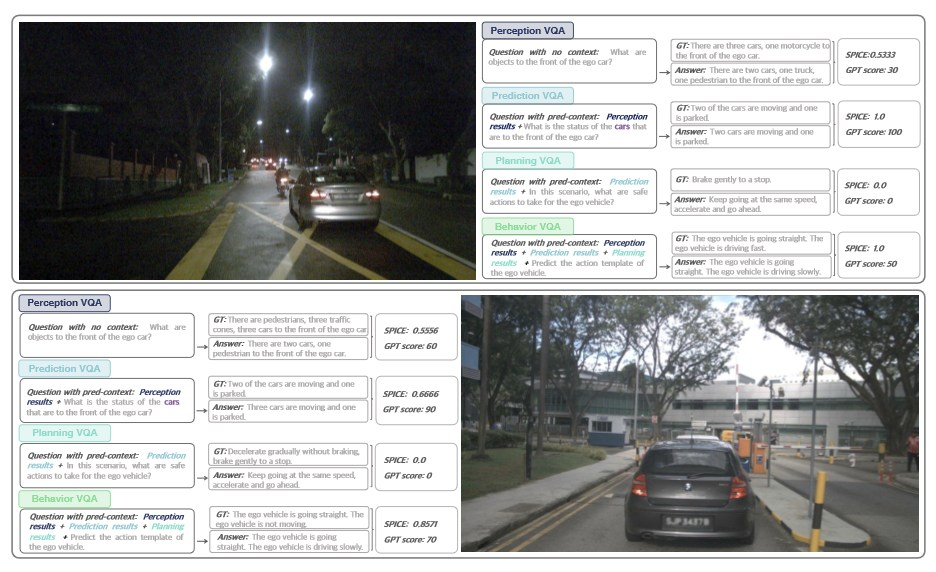
図14：DriveLM-nuScenes におけるその他の定性的結果。図中の例は、運転シナリオにおいて VQA タスクを遂行する DriveLM-Agent の頑健な能力を示している。
図中ラベル：Perception VQA／Prediction VQA／Planning VQA／Behavior VQA＝知覚 VQA／予測 VQA／計画 VQA／行動 VQA、Question with no context＝文脈なしの質問、Question with pred-context＝予測文脈付きの質問、Perception results / Prediction results / Planning results＝知覚結果／予測結果／計画結果。
上段（夜間）：知覚「自車の前方にあるオブジェクトは何か？」正解「自車の前方に 3 台の車、1 台のオートバイがいる。」回答「自車の前方に 2 台の車、1 台のトラック、1 人の歩行者がいる。」（SPICE 0.5333、GPT スコア 30）。予測「自車の前方にある車の状態は？」正解「車のうち 2 台は移動しており、1 台は駐車している。」回答「2 台の車が移動しており、1 台が駐車している。」（SPICE 1.0、GPT スコア 100）。計画「このシナリオで、自車がとるべき安全な行動は何か？」正解「穏やかにブレーキをかけて停止する。」回答「同じ速度で進み続ける、加速して直進する。」（SPICE 0.0、GPT スコア 0）。行動「自車の行動テンプレートを予測せよ。」正解「自車は直進している。自車は速く走行している。」回答「自車は直進している。自車はゆっくり走行している。」（SPICE 1.0、GPT スコア 50）。
下段（昼間）：知覚 正解「自車の前方に歩行者、3 つのトラフィックコーン、3 台の車がある。」回答「自車の前方に 2 台の車、1 人の歩行者がいる。」（SPICE 0.5556、GPT スコア 60）。予測 正解「車のうち 2 台は移動しており、1 台は駐車している。」回答「3 台の車が移動しており、1 台が駐車している。」（SPICE 0.6666、GPT スコア 90）。計画 正解「ブレーキをかけずに徐々に減速する、穏やかにブレーキをかけて停止する。」回答「同じ速度で進み続ける、加速して直進する。」（SPICE 0.0、GPT スコア 0）。行動 正解「自車は直進している。自車は動いていない。」回答「自車は直進している。自車はゆっくり走行している。」（SPICE 0.8571、GPT スコア 70）。
G.2 Waymo
本節では、センサ構成をまたいだ我々のモデルの汎化性を示す。図15 は、DriveLM-nuScenes で学習したモデルを Waymo での推論に適用した結果を示している。Waymo のデータにはアノテーションを行っていないため、質問は人手で定義しており、正解は提供されていない。これらの結果は、我々のモデルの頑健な汎化能力を示している。
G.3 DriveLM-CARLA
本節では、CARLA データセットに対する定性的な例を示す。
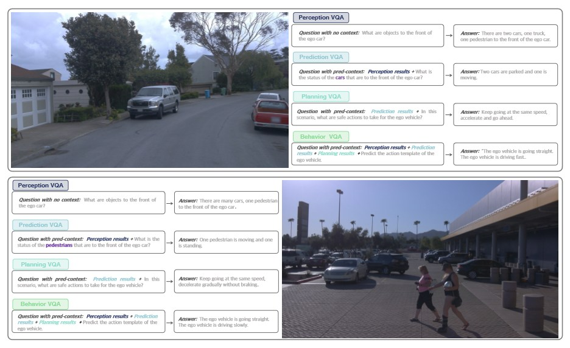
図15：Waymo における定性的結果。新しいセンサ構成への DriveLM-Agent の汎化性を示す 2 つの例を提示し、DriveLM-Agent の強力な汎化能力を実証する。
図中ラベル：Perception VQA／Prediction VQA／Planning VQA／Behavior VQA＝知覚 VQA／予測 VQA／計画 VQA／行動 VQA、Question with no context＝文脈なしの質問、Question with pred-context＝予測文脈付きの質問、Perception results / Prediction results / Planning results＝知覚結果／予測結果／計画結果。
上段：知覚「自車の前方にあるオブジェクトは何か？」回答「自車の前方に 2 台の車、1 台のトラック、1 人の歩行者がいる。」予測「自車の前方にある車の状態は？」回答「2 台の車が駐車しており、1 台が移動している。」計画「このシナリオで、自車がとるべき安全な行動は何か？」回答「同じ速度で進み続ける、加速して直進する。」行動「自車の行動テンプレートを予測せよ。」回答「自車は直進している。自車は速く走行している。」
下段：知覚 回答「自車の前方に多くの車、1 人の歩行者がいる。」予測「自車の前方にいる歩行者の状態は？」回答「1 人の歩行者が移動しており、1 人が立ち止まっている。」計画 回答「同じ速度で進み続ける、ブレーキをかけずに徐々に減速する。」行動 回答「自車は直進している。自車はゆっくり走行している。」
未見の歩行者シナリオへの汎化。図16 は、未見の歩行者シナリオに関する汎化テストセットにおいて生成された行動を示している。図16 の上段に示した 1 つ目の例は、DriveLM-Agent が歩行者を正確に認識する成功例を示している。DriveLM-Agent は続いてとるべき適切な行動を推論し、この場合それは車両を停止させることである。行動生成はこの文脈を解釈でき、自車が完全に停止していることからわかるように、正しい行動パターンが得られている。残りの 2 つの例は、歩行者を含むシナリオにおける DriveLM-Agent の主要な失敗モードを表している。図16 の中段の例は、モデルが依然として歩行者を検出しているケースを示している。しかし、モデルはこの検出を正しい行動に結びつけることができていない。下段に示した最後の例は、モデルが歩行者を完全に見落とすという、より深刻な限界を浮き彫りにしている。このような場合、DriveLM-Agent は歩行者が存在しないかのように振る舞い、その結果として回避や停止の操作を一切実行しないため、実世界のシナリオでは重大なリスクとなる。
グラフ視覚質問応答。本節では、DriveLM-Agent の性能を評価するため、CARLA データセットを用いたグラフ視覚質問応答タスクの 2 つの例を示す（図17）。評価した質問の一部のみを示している。1 つ目の例では、自車は別の車両の後ろを走行している。主なタスクは、道路に沿って走行し、先行車両に応じて速度を調整することである。結果は、DriveLM-Agent がシーン内のすべての重要オブジェクトを正確に識別することで、熟達したシーン理解を示していることを示している。正解データには CARLA シミュレータによるオブジェクトの色のラベル付けに時折不正確な点が見られるにもかかわらず、DriveLM-Agent はオブジェクト認識において信頼できる性能を維持している。さらに、モデルは前方の車両を識別し、先行車両に基づいて何をすべきかを推論できる。
2 つ目の例は、一時停止標識で規制された交差点で起こる。DriveLM-Agent はすべてのオブジェクトを識別し、状況について推論できる。DriveLM-Agent は、停止する必要があるのは単に一時停止標識のためではなく、主に前方に位置するオートバイのためであると正しく識別した。このことは、DriveLM-Agent が特定の状況下では、交通制御装置よりも動的な障害物を優先できることを示唆している。
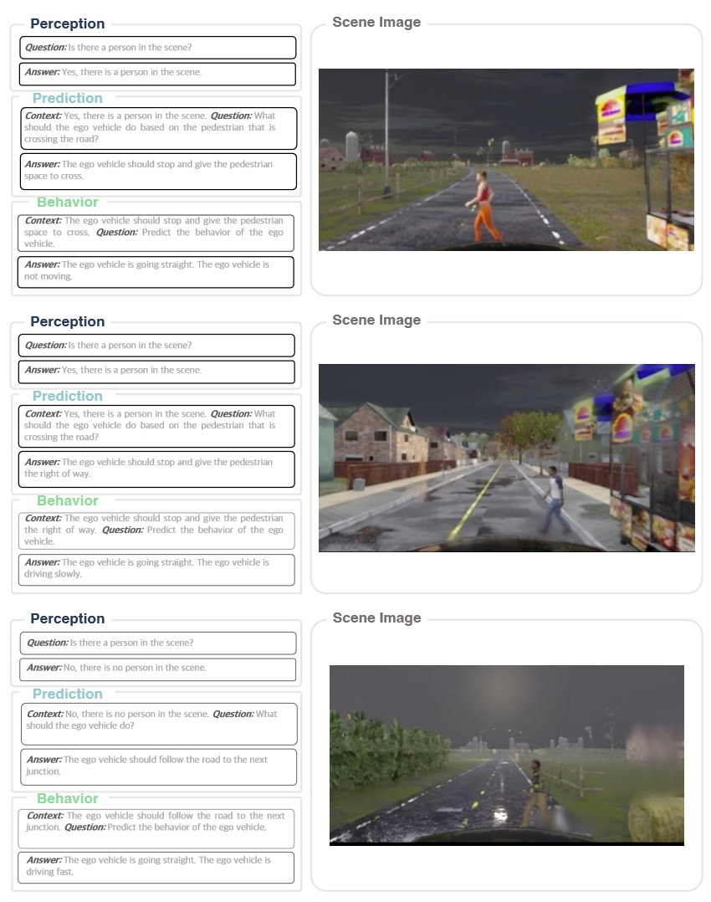
図16：DriveLM-CARLA の汎化テストセットにおける定性的結果。DriveLM-Agent が歩行者シナリオに対処する 3 つの例を示す。1 つ目の例は成功例を、2 つ目と 3 つ目はモデルの 2 つの典型的な失敗例を示している。
図中ラベル：Perception＝知覚、Prediction＝予測、Behavior＝行動、Scene Image＝シーン画像、Question＝質問、Answer＝回答、Context＝文脈。
上段：知覚 質問「シーン内に人はいるか？」回答「はい、シーン内に人がいる。」予測 文脈「はい、シーン内に人がいる。」質問「道路を横断している歩行者に基づいて、自車は何をすべきか？」回答「自車は停止して、歩行者に横断する余地を与えるべきである。」行動 文脈「自車は停止して、歩行者に横断する余地を与えるべきである。」質問「自車の行動を予測せよ。」回答「自車は直進している。自車は動いていない。」
中段：知覚 回答「はい、シーン内に人がいる。」予測 回答「自車は停止して、歩行者に優先通行権を与えるべきである。」行動 文脈「自車は停止して、歩行者に優先通行権を与えるべきである。」回答「自車は直進している。自車はゆっくり走行している。」
下段：知覚 回答「いいえ、シーン内に人はいない。」予測 文脈「いいえ、シーン内に人はいない。」質問「自車は何をすべきか？」回答「自車は次の交差点まで道路に沿って進むべきである。」行動 文脈「自車は次の交差点まで道路に沿って進むべきである。」質問「自車の行動を予測せよ。」回答「自車は直進している。自車は速く走行している。」
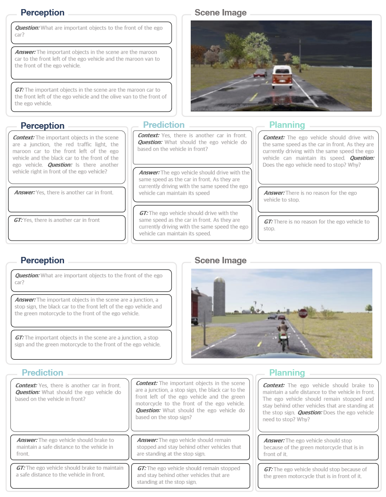
図17：DriveLM-CARLA における VQA の定性的結果。1 つ目の例は、自車の直前に車両がいる状況に DriveLM-Agent がどのように対処するかを示している。2 つ目の例は、一時停止標識があり、自車の前方で他の交通参加者が一時停止標識のところで待機している交差点を示している。
図中ラベル：Perception＝知覚、Prediction＝予測、Planning＝計画、Scene Image＝シーン画像、Question＝質問、Answer＝回答、GT＝正解、Context＝文脈。
1 つ目の例：知覚 質問「自車の前方にある重要なオブジェクトは何か？」回答「シーン内の重要なオブジェクトは、自車の左前方にある栗色の車と、自車の前方にある栗色のバンである。」正解「シーン内の重要なオブジェクトは、自車の左前方にある栗色の車と、自車の前方にあるオリーブ色のバンである。」知覚 文脈「シーン内の重要なオブジェクトは、交差点、赤信号、自車の左前方にある栗色の車、自車の前方にある黒い車である。」質問「自車の直前に別の車両はいるか？」回答「はい、前方に別の車がいる。」正解「はい、前方に別の車がいる」。予測 文脈「はい、前方に別の車がいる。」質問「前方の車両に基づいて、自車は何をすべきか？」回答・正解「自車は前方の車と同じ速度で走行すべきである。両者は現在同じ速度で走行しているので、自車は速度を維持できる。」計画 文脈「自車は前方の車と同じ速度で走行すべきである。両者は現在同じ速度で走行しているので、自車は速度を維持できる。」質問「自車は停止する必要があるか？なぜか？」回答・正解「自車が停止する理由はない。」
2 つ目の例：知覚 質問「自車の前方にある重要なオブジェクトは何か？」回答「シーン内の重要なオブジェクトは、交差点、一時停止標識、自車の左前方にある黒い車、自車の前方にある緑色のオートバイである。」正解「シーン内の重要なオブジェクトは、交差点、一時停止標識、自車の前方にある緑色のオートバイである。」予測（左）文脈「はい、前方に別の車がいる。」質問「前方の車両に基づいて、自車は何をすべきか？」回答・正解「自車は前方の車両との安全な距離を保つためにブレーキをかけるべきである。」予測（右）文脈「シーン内の重要なオブジェクトは、交差点、一時停止標識、自車の左前方にある黒い車、自車の前方にある緑色のオートバイである。」質問「一時停止標識に基づいて、自車は何をすべきか？」回答・正解「自車は停止したまま、一時停止標識のところで停止している他の車両の後ろにとどまるべきである。」計画 文脈「自車は前方の車両との安全な距離を保つためにブレーキをかけるべきである。自車は停止したまま、一時停止標識のところで停止している他の車両の後ろにとどまるべきである。」質問「自車は停止する必要があるか？なぜか？」回答・正解「自車は、前方にいる緑色のオートバイのために停止すべきである。」
H その他の関連研究
本節では、本論文で言及した関連研究を補足する。
グラフ構造上の推論。推論は人間の思考を模擬する基本的な形態の 1 つであり、1 つまたは複数の既存の判断から新たな判断を導くことを可能にする［12］。先行する推論研究の多くは、グラフに基づくアプローチに根ざしている［5,13,75,92］。XNMs［75］は、構造化された知識を用いた説明可能かつ明示的な推論のためにシーングラフを用いる。KPRN［92］は推論に知識グラフを利用し、それを推薦システムに応用している。GoT［5］は LLM が生成した情報を任意のグラフとしてモデル化し、LLM の推論を脳の仕組みに近づけている。これらの成功した試みに着想を得て、我々は自動運転における知覚・予測・計画の各段階をグラフで結びつけることを試み、モデルが推論過程を把握し、学習したグラフ構造に基づいて未見のシナリオを推論できるようにする。
LLM による身体性をもつ計画 近年の研究は、LLM［25,43,83］の卓越した推論能力と汎化能力を、身体性をもつ AI システム［23,33,35,40,51,69,108］に活用しようとしている。PaLM-E［23］は、逐次的なロボット操作の計画を含むさまざまな身体性タスクのために LLM を学習する。CaP［51］は、実システム上で実行される言語モデル生成プログラムのロボット中心の定式化を提供する。RT-2［108］はロボットの行動を言語トークンとして表現し、視覚言語モデルを学習してロボットの方策を出力させる。これらの手法は身体性をもつ計画タスクにおける LLM の能力を示しており、それらを応用して、はるかに研究の進んでいない自動運転（AD）における汎化の現状の欠点に対処しようという着想を我々に与えた。
運転のための視覚言語ベンチマーク。AD システム向けに提案される視覚言語データセットは増え続けている［20,41,42,56,59,67,71,97,98,101,107］。NuScenes-QA［67］と NuPrompt［98］は、周囲のオブジェクトの位置と状態を記述することで知覚情報をテキストとして提供する。BDD-X［42］は、自車の行動の理由を自然言語の記述で提供する。DRAMA［56］と Rank2Tell［71］は重要なオブジェクトを特定し、対応する運転上の提案を提供する。しかし、これらのデータセットはシーンレベルの文脈や個々のオブジェクトに焦点を当てている。DriveLM は、オブジェクトレベルとタスクレベルの言語アノテーションをグラフ構造で体系化することで、文献におけるこのギャップを埋める。
I より広範な影響
我々は、本アプローチがより優れた VLM から直接恩恵を受けられるようにすることで、自動運転分野の進歩を加速できると考えている。我々の目標は、成功すれば甚大な影響をもたらすであろう自動運転に向けて前進することである。VLM をこの分野に持ち込むことで、ハルシネーションや大量の資源使用といった倫理的な影響を引き受けることになると認識している。しかし、人間と自動運転システムとの対話性を高めることで、この技術への信頼を築くことができる。これにより技術の受容が早まり、長期的にはより安全な交通につながる可能性がある。